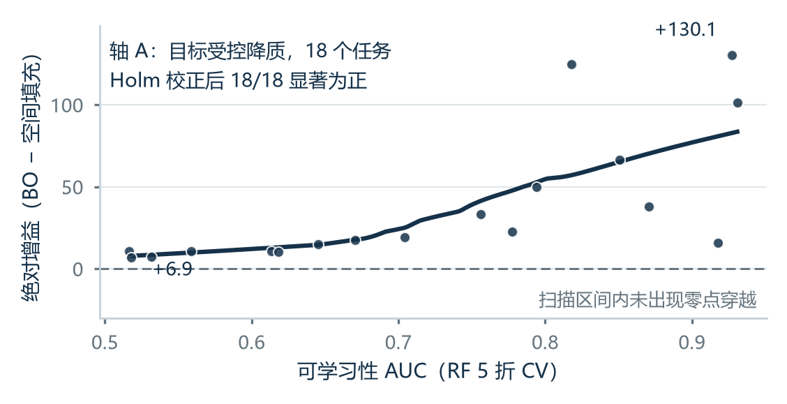
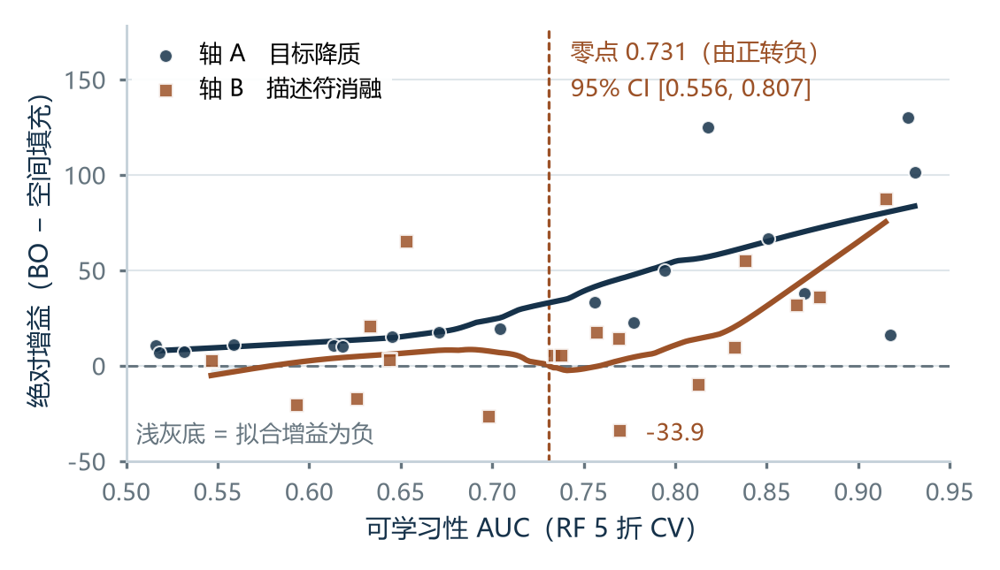
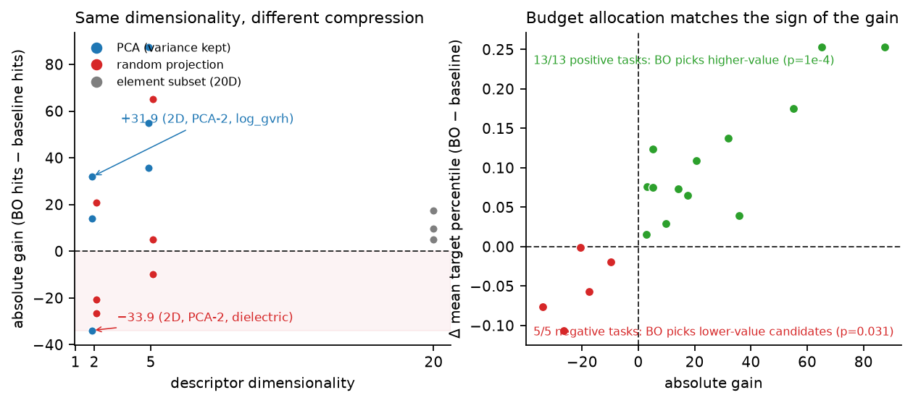
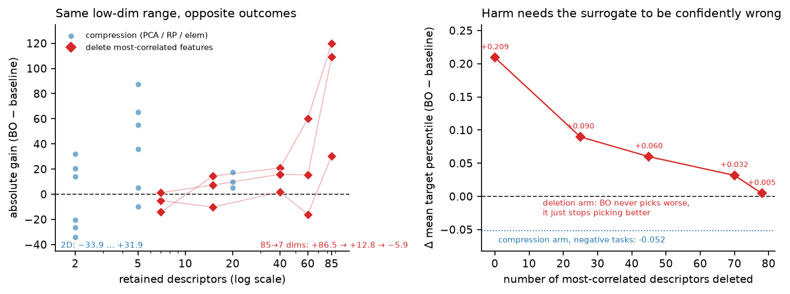
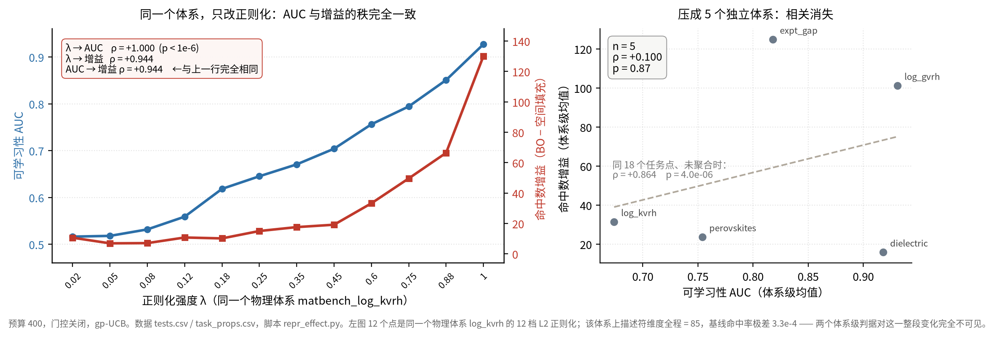
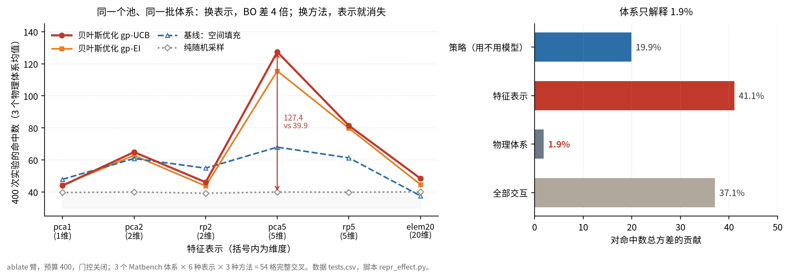
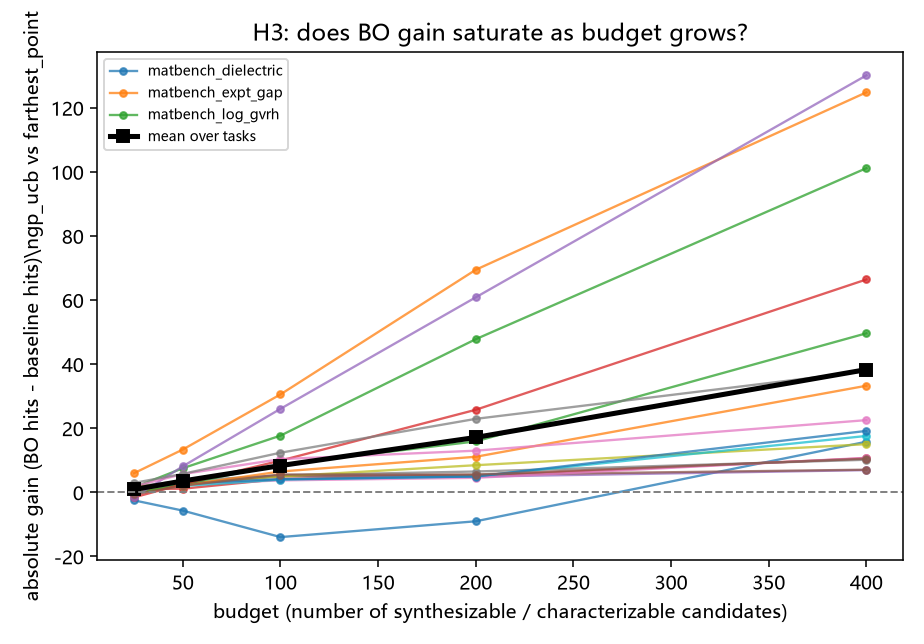
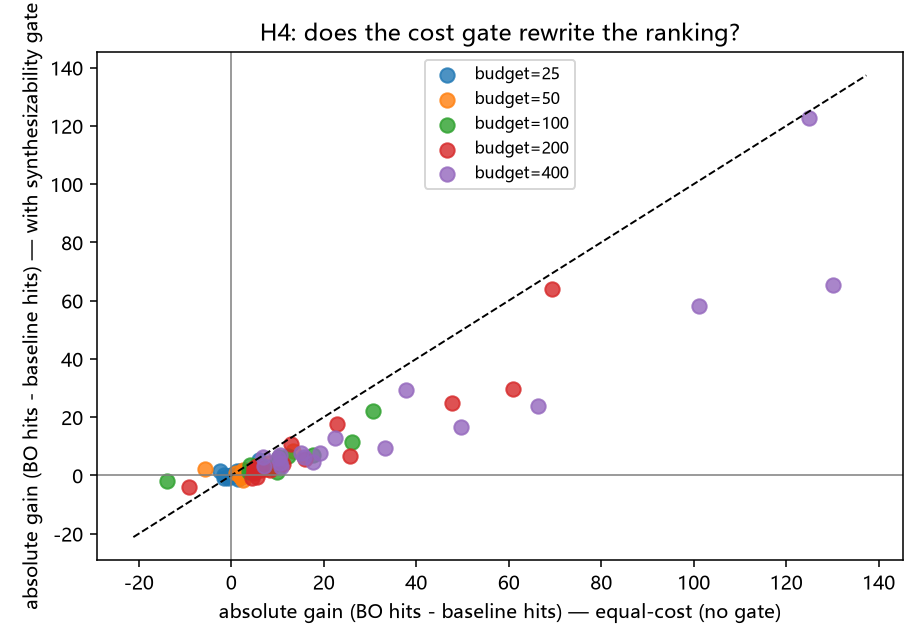
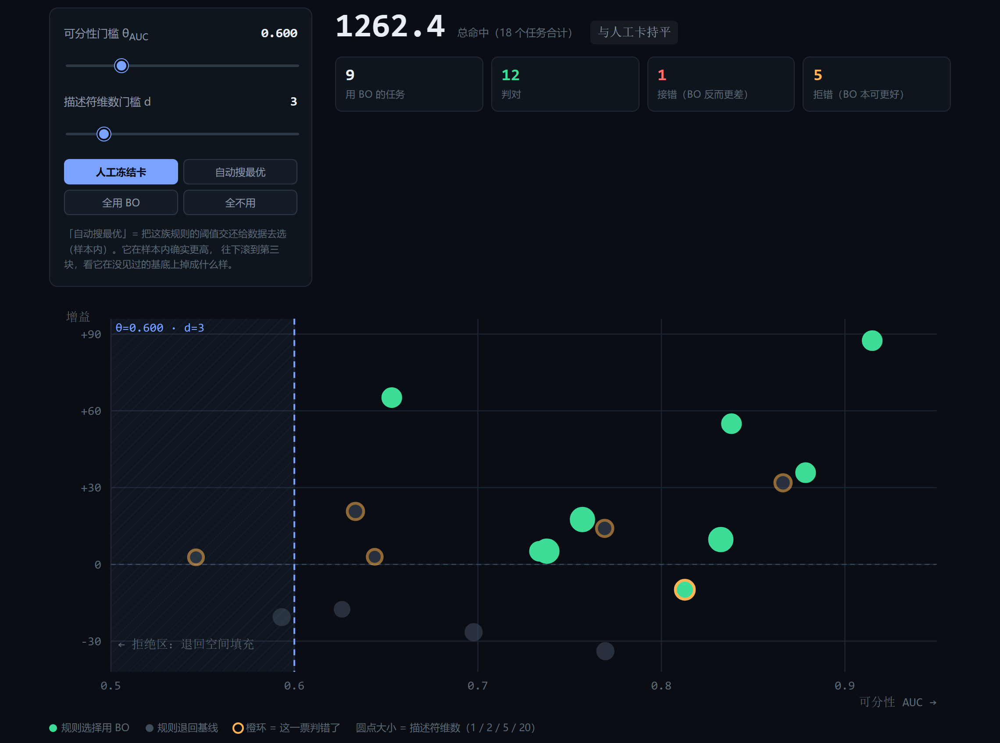

科研 Agent 的能力边界标定 | 赛道 04 AI Agent | 验证场：材料信息学
这份报告只回答一个问题：拿到一个新体系，什么时候不该用贝叶斯优化。做法是把「目标与描述符的耦合强度」当作唯一被控变量，在 36 个任务、4 种策略、30 个种子、两种成本口径下跑满 8640 次轨迹，把增益由正转负的位置标出来：AUC*=0.731（95% CI 0.556–0.807）。边界找到了，但它预报不了自己。可学习性 AUC 与增益的秩相关在主臂是 +0.864，按物理体系整簇重抽后置信区间变成 [−0.875,+0.952]——有效样本量是体系数（3–5），不是任务数（18）。同一批任务里 12 个其实是同一个体系的 12 档目标降质，把这点拆开之后，相关掉到 +0.100。所以交付物不是自动开关，是一张保守熔断卡：只在实测出现过灾难的区域（描述符 ≤2 维）拒绝，并公布自己的错误率（漏报 0/27、误杀 5/9；分母分别为卡放行的 27 个与卡拒绝的 9 个任务）。端到端演示在同一批任务上证明它拒得对，也公开了它拒错的那一个。平台承担判断层的三次实验：一次失败、一次真发现问题、一次把失败翻过来用。三者的共同结论是裁决权必须留在代码里。本文三点贡献，按评审权重排序：独立体系——把「何时不用 BO」落成一张披露单方法论：判据可复用、阈值随基底移动（0.578–0.805）且如实标注，随卡公布它自己的错误率，可直接嵌进任何主动学习工作流；真发现——在 3×6 全因子设计上证明，AL/BO 在材料上的「失效」主要由特征表示（占方差 41%）而非物理体系（占 1.9%）驱动，即我们复现的 3 个材料基底上，体系级判据在预测一个由表示决定的量；新方法——给出小集群（G=3–5）下正确的推断做法（按体系重抽、Ibragimov–Müller），并演示「活下来」的判据才是真的。
P1 · 问题与动机
1.1 问题：候选有几千个，预算只够测两百个
给定一批候选材料（数千个）、一个目标性质（例如“高介电常数”）、一套描述符，以及一个远不够把候选全测一遍的实验预算：下一个实验该做哪一个？
材料信息学的预算大多烧在这道选择题上，每个课题组每周都要作答。合成与表征是瓶颈：一个候选从“被模型选中”到“被真正做出来并测出性能”，中间是数周人工和数千元成本。所以把有限的实验花在哪，比模型预测得有多准，更影响研究进度。
主动学习 / 贝叶斯优化（BO）正是为这个问题设计的，今天它几乎成了默认选项。但它的收益来自一个少被检验的前提：目标与描述符之间必须存在可学习的关系。一旦描述符不足以决定该性质，代理模型就是在用方差编故事，把预算花在模型的自信而不是材料的价值上。这时候最朴素的均匀铺点反而更好。
于是一个直接决定经费效率、却一直没人系统回答的问题：
拿到一个新体系时，我该不该上主动学习？ 如果描述符不够好，主动学习会不会不但没用、反而把预算烧在错误的地方？
1.2 两项工作：科学产出与方法学标定
① 科学产出：在三个真实材料体系上，真的把候选筛出来了。
我们让智能体在真实数据上完成一次完整的材料发现流程：诊断体系 → 决定是否用优化 →在预算内筛选 → 输出 top-30 候选清单（含元素组成与化学可行性标记）。结果：
口径：命中 = 目标值落入 top-10% 分位；随机基线的期望命中率恒为 0.100。预算 200 × 10 种子，门控开启（排除 >80 原子的超大体系、贵金属按 3× 计价）。
| 真实体系 | 目标性质 | 可学习性 AUC | 预算内选中 / 命中 | 命中率 | 相对随机 |
|---|---|---|---|---|---|
matbench_dielectric | 介电常数 | 0.919 | 542 / 185 | 0.341 | 3.4× |
matbench_expt_gap | 实验带隙 (eV) | 0.816 | 818 / 195 | 0.238 | 2.4× |
matbench_log_gvrh | 剪切模量 log(GPa) | 0.932 | 870 / 190 | 0.218 | 2.2× |
产出清单还带化学可行性标记：top-30 中不含放射性/高毒元素的有 20–24 个（我们标记而不静默剔除，因为“含 Th 但介电常数极高”这类条目对研究者是有信息的，不该被算法悄悄删掉）。
指标口径说明：上表“相对随机”一列与 Matbench Discovery（Riebesell et al., Nat. Mach. Intell. 2025）提出的 DAF（Discovery Acceleration Factor） 是同一个量——命中率 ÷ 随机期望命中率。我们用 DAF 的等价量而非另立指标，是为了让读者能直接对上该 leaderboard 的口径；差别在于我们未按其 prospective 协议做分布外拆分（见 4.6⑥）。
筛选结果的化学合理性通过了自检，这是我们对“结果不是随机数”的一个独立佐证：剪切模量体系的 top 候选富集于 B / W / Re / Os / Tc / Nb（硼化物加难熔金属，高硬度材料的已知配方）；带隙体系富集于氧化物与硼酸盐（O / B 主导）；介电体系富集于 Sb / Bi / Ge / Sn 等高极化率元素，都符合已知的材料化学直觉。
有一条界线我们守着：不宣称发现了新材料。这些候选来自公开基准数据集的历史条目，本工作的产出是“方法能在真实体系上把富集度做到随机的 2.2–3.4 倍”这一可验证的能力，以及随之而来的候选清单本身。任何材料学结论仍需实验验证。
② 方法学标定：这条能力什么时候会失效？
第一件事做得好不代表它总能做得好。所以我们做了第二件事：把“目标-描述符耦合强度”作为唯一被控变量做系统扫描（8640 次完整实验轨迹：36 任务 × 4 策略 × 30 种子 × 2 口径），定位 BO 相对强基线的增益由正转负的失效边界，并把它变成一张可直接执行的决策准则卡。
两件事的关系是：①证明能力真实存在，②划出能力的作用范围。只做①是又一个 benchmark 分数；只做②是纯 AI 方法的自我研究（AI4AI）。合起来才是一个完整的材料信息学工作：我们知道这个方法能做什么，也知道它什么时候会骗我们。
1.3 交付物
FailBound-Lab 是一个自驱动实验智能体，一句话概括：
在真实材料数据基准上，定位主动学习相对强基线的失效边界，并把这条边界变成一个会质疑自己的优化器。它先诊断体系，再决定该不该优化，并把自己什么时候会判断错一并告诉使用者。
1.4 目标用户与使用场景（官方硬性要求）
| 目标用户 | ① 预算受限、需要决定“买哪批样品 / 跑哪组 DFT”的材料实验室研究者；② 正在为自己的科研 Agent 选主动学习策略的 AI4S 工程师 |
| 使用场景 | 拿到新体系时，先花 25 次空间填充测「不优化能拿多少」，对照失效边界与置信度决定策略；或直接跑端到端筛选拿候选清单。※ 边界所用自变量是可学习性 AUC，它在回放设定下用全池标签算出，不是一个可部署的实时仪表（§4.4.3 给了标定：25 点估出的 AUC 与真值 ρ=0.04，50 次随机抽样才到 0.76） |
| 不适用 | 预算大到可以全扫的情况（这时 BO 与否都无所谓）；描述符与目标耦合极强的常规高通量筛选 |
这一步同时回应“科学价值”里的“实际应用潜力”：我们给出的不是又一个 benchmark 分数，而是一个可以直接嵌进任何主动学习工作流的前置开关 + 一个能直接出候选清单的端到端流程。
1.5 相关工作与本文定位
“主动学习可能不如随机”不是我们的发现，ML 侧已有一条十年长的负结果谱系，材料侧也有硬证据。把所有相关工作摊开看，本文的位置才说得清：前人证明了“会输”，本文把“什么时候输”标定在一个可提前测的变量上，并公开标定自身的错误率。
| 已有工作 | 结论 | 与本文的关系 |
|---|---|---|
| Bergstra & Bengio, JMLR 2012 | 随机搜索在仅少数维度重要时与（甚至优于）贝叶斯优化相当；低有效维度下 BO 的优势消失 | 本文失效机制的形式先例：我们做的是其材料场景的受控复现，并补上可操作熔断规则与 8640 条轨迹公开 |
| Lowell, Lipton & Wallace, EMNLP 2019 | AL 收益不稳定；采出的数据集与采集模型耦合，换模型后常不如 i.i.d. 随机 | 为我们“AL 不是普适默认项”提供跨领域先例；我们不重复该论证 |
| Karamcheti et al., ACL 2021 | 8 种 AL 在 5 模型 × 4 数据集上全面输给随机；根因是 collective outliers——AL 偏爱、模型学不动的成组样本 | 我们在 3.4 把这一机制在材料池上量化：预算被投到了目标分位更低的候选 |
| Rohr et al., Chem. Sci. 2020 | 材料侧顺序学习横评：模型或采集函数选错可显著劣于随机，存在 floor effect | 与我们“换掉一个基线”一节同源；我们进一步给出失效位置而非仅告警 |
| Tamura et al., Sci. Rep. 2024 | 低维、输入均匀时 AL 稳赢随机，并报告“描述符维度越小 AL 越可能优于随机” | 方向相反的对照，3.3.1 专门处理：我们比较的是同维度下的两种压缩方式，不是不同物理来源的低维输入 |
| Cinquin et al., AI4Mat@ICLR 2025 | 默认初始化的 GP 几乎不比随机好；专家特征不如学出来的特征 | 提示我们的 88 维元素分数属“专家特征”，边界位置可能部分是表征选择的结果（见 4.6） |
| Dastin-van Rijn & Widge, J. Neural Eng. 2025 | 效应量低时 BO 因边界过采样失稳；边界规避核可救 | 我们尚未做的干预实验，已列为后续计划（4.10） |
| Wang et al., JAIR 2016（REMBO） | BO 的可扩展性取决于有效维度 $d_e$，而非名义维度 | 本文措辞据此修正：轴 B 不是“维度诅咒”，是把 $d_e$ 打坏（见 2.2） |
| Liang et al., npj Comput. Mater. 2021 | 跨五域 BO 横评；提出 acceleration / enhancement 指标 | 我们主表用命中数，指标口径尚未与之对齐（见 4.6） |
| Riebesell et al., Nat. Mach. Intell. 2025（Matbench Discovery） | 区分 retrospective 与 prospective；提出 DAF；回归指标与发现指标错位 | 本文 1.2 表中的“相对随机”倍数即 DAF 的等价量，但我们未按该框架做 prospective 拆分 |
| Panickssery, Bowman & Feng, NeurIPS 2024 | LLM 自评偏好随自识别能力线性增强 | 为“审计层不得由被审计者编写”提供实证依据（见 2.1、5.3） |
本文新增的三件事（其余均为已有结论或已知方法的组合）：① 把失效标定在可学习性 AUC 上，给出零点与 CI，并把这个变量自身的两处限制一起量出来：它在真实开题时读数很粗（25 次空间填充估出的 AUC 与真值 ρ=0.04），且不是一个可迁移的规则（§4.4.2）；② 用两条独立的降信息轴（目标降质 / 描述符削减）区分“标签噪声”与“表征不足”——文献里这两件事通常混在一起；③ 把边界交付为带错误率公示的熔断器（漏报 0/27、误杀 5/9），而不是一个自动开关。
P2 · 技术方案
2.1 智能体架构
候选池 + 目标 + 描述符 + 预算
│
┌──────────▼───────────┐
│ ① 诊断 预算25 空间填充 │ → 测出「不优化能拿多少」
├──────────────────────┤
│ ② 标定 可学习性 AUC │ → RF 5 折，口径与实验完全一致
├──────────────────────┤
│ ③ 决策 对照失效边界 │ → USE_BO / 拒绝，附置信度与理由
├──────────────────────┤
│ ④ 执行 + 反事实检验 │ → 按决策跑完，再用另一策略跑一遍对照
└──────────┬───────────┘
▼
决策卡（可审计）+ ⑤ 校准段：我自己被校准的数据四步各自是可独立调用的能力单元（配置导出见 agent_config_export/）。运行时是纯确定性代码，零 LLM 调用、零网络请求。决策链每一步都要能被第三方逐比特复算，LLM 的随机推理一进来，证据链就断了。闭环本身是这样的：感知体系可学习性 → 对照实测边界决策并显式给出不确定度 → 执行 → 用反事实检验自己的决策 → 把自己的错误率一起打印出来。SciencePal 在这里承担沙箱执行与过程留痕（Replay）。我们的结论必须可复现，而可复现不该取决于某个平台还开着。
2.2 实验设计：两条扫描轴
数据（100% 真实）：matbench v0.1 官方基准（LBL / Materials Project），88 维描述符（85 种元素分数 + 3 个聚合统计量），候选池 3000，所有任务共享同一描述符空间。成本模型（n_atoms / 稀有元素）直接来自真实化学式，不人为设造。
两条独立的“降信息”轴，这是本工作方法上的核心：
| 轴 | 怎么降 | 任务数 | 目的 |
|---|---|---|---|
| A. 目标降质 | 对真实目标 y 做受控降质 y_λ = √λ·std(y) + √(1−λ)·ε，λ ∈ 12 档。描述符、候选池、成本模型一个字不动 | 12（主扫描轴）+ 3（跨基底抽查） | 系统扫出“耦合强度 → 增益”曲线 |
| B. 描述符消融 | 目标一个字不动，只把描述符空间用三族算子削减：PCA 前k维 / 随机投影 / 只保留最常见 j 种元素 | 18（3 真实基底 × 6 算子） | 验证 A 轴找到的边界不是合成数据的产物 |
加 3 个零降质真实锚点（expt_gap / dielectric / log_gvrh）。共 36 个任务。
两条轴缺一条都站不住。只用 A 轴，会被一句话打回来：“你研究的是加噪标签，不是材料发现”。B 轴的目标 100% 真实，只动描述符；若两条独立轴给出同一条边界，边界就是“可学习性”的函数，而不是某个构造手法的产物。
关于“维度”的措辞（2026-10-21 依文献修正）：B 轴不构成“维度诅咒”的证据。按 REMBO（Wang et al., JAIR 2016）的框架，BO 的性能取决于目标函数的内在有效维度 $d_e$，而不是名义维度：只要搜索子空间维度 $d \ge d_e$，最优点仍以概率 1 落在子空间内。本工作对描述符做随机投影时，打坏的不是“维度少”，而是“维度少且 $d_e$ 没被保住”——投影方向与目标的有效子空间无关。因此 B 轴的准确说法是“表征不充分导致 $d_e$ 被破坏”，而非“维度低所以 BO 会输”。3.3.1 的同维对照为这个区分提供了直接证据。
命中口径：命中 = 目标值 ≥ 该任务分布的 top-10% 分位。采用分位数而非固定阈值，使所有任务的基线命中率恒为 10%，这一步是为了消除“基线命中率”与“可学习性”两个自变量的混淆（我们在预实验中实测发现了该混淆并据此修正）。
成本模型与门控：一次“实验” = 把一个候选推进到可合成/可表征状态。成本 = 1 ×（n_atoms > 40 ? 2 : 1）×（含 Pt/Ir/Rh/Pd/Au/Ru/Re/Os ? 3 : 1）；n_atoms > 80 直接排除（硬门控）。这让“预算 N 次”成为一个有物理含义的约束，而不是抽象的迭代数。
策略集：
- 强基线
farthest_point（最远点 max-min 空间填充），真正公平的对手 - 主动学习
gp_ucb（主）/gp_ei（次） random_uniform作随机参照，作用是验证命中口径本身（期望命中率必须恒为 10%），不参与主结论
一次决定性的自我修正：最初的强基线是
lhs_stratified。完成 8640 次 run 后我们做了一次强制自检：命中阈值按 top-10% 分位定义，任何无偏策略的期望命中率都必须是 0.100。实测random_uniform在全部 36 个任务上恒为 0.100（口径没错），而lhs_stratified在 0.022 ~ 0.326 间摆动（15 倍）：它在 n=1 逐步调用时退化成“随机撒点 + 吸附最近邻”，吸附会偏向候选稀疏的尾部。由于相对增益以基线命中数为分母，我们测到的“BO 增益”实际在测“基线的运气”。换成farthest_point后作废全部 8640 次 run 并重跑（已登记预注册 §10）。这件事本身也是一个可交付的结论：在把主动学习拿去和非自适应设计比较之前，先检查那个非自适应设计自己的稳定性。这一步在领域里通常被跳过。
2.3 预注册
preregistration.md 在任何实验数据产生之前写定并随代码提交，包含：任务集与白名单（防事后挑任务 = p-hacking）、命中口径、预算档、种子数、统计方法（Wilcoxon 符号秩 + Cliff's δ + bootstrap 2000 次 95% CI + Holm–Bonferroni，α=0.05）、边界拟合方法（0.05 分箱 + LOWESS + 零点 bootstrap CI）、以及偏离登记表。
执行中每次方案改动都进了偏离登记表（含理由与时间戳，累计 37 条；其中 13 条是定稿前的自我审计与新增实验，结论方向多为削弱）。最重要的三条：
- 任务数 20 → 18：2 个任务与 λ=1.00 档 Spearman=1.0000、命中集合 100% 重合，纯冗余。
- H1/H2 主检验改用等成本组：实测 ρ(成本, 目标) 随 λ 单调上升（0.037→0.190）， BO 越会找高目标就越倾向选贵候选 → 预算内实验次数更少 → 命中数被系统性压低， 会制造假性的“BO 失效”，且该偏差与自变量共线。门控 vs 等成本之差本身成为 H4。
- 主检验家族限定为 36 次（每臂 18 任务 × 主策略 × 主预算档）， 否则 270 次全纳入 Holm 会过度保守。
P3 · 验证结果 ①：失效边界
本页全部数字来自
results/boundary_fit.json（本地全量：36 任务 × 4 策略 × 30 种子 × 2 口径= 8640 次 run，预算档 25/50/100/200/400）。图取fig_two_axes.png与fig_boundary_auc.png。
3.1 可学习性跨度
| 轴 | AUC 范围 | 说明 |
|---|---|---|
| A 目标降质 | 0.516 → 0.931 | 12 档 λ 单调扫出 |
| B 描述符消融 | 0.546 → 0.915 | 三族算子 × 3 真实基底 |
| 描述符-目标相关系数 r | 全样本仅 0.034 → 0.527 | r 几乎不区分可学与不可学 |
最后一行是一条独立发现：常用的“描述符-目标相关性”判据不可用：AUC 拉开了 0.52→0.93，而同一任务集上的 r 只在一个与 AUC 不同步的宽区间里游走；用 r 做前置判断，会在成片的失效区上误判为“可以上 BO”。
3.2 轴 A：目标加噪，未出现失效边界
把真实目标逐步替换成独立噪声（λ 从 1.00 降到 0.02，AUC 从 0.931 压到 0.516）：
- 扫描区间内未观察到零点穿越（18 个任务）
- bootstrap 2000 次中仅 2.9% 的重采样出现零点，不足以支持“存在边界”，故不报 AUC*
- Holm 校正后 18/18 个任务显著为正，无一个任务转负
- 绝对增益区间 +6.9 ~ +130.1 个命中候选（预算 400 次实验内），全部为正

results/tests.csv 同一口径重绘，数值未改。即使目标已几乎是与描述符独立的纯噪声（AUC=0.516），BO 仍显著优于空间填充。结论：目标噪声只会让 BO 退化成盲采样。它变得不划算，但不会变得有害。
3.3 轴 B：描述符削减，BO 会输
目标值一个字不动，只用三族算子（PCA / 随机投影 / 元素子集）削减描述符：
- 4 / 18 个任务上 BO 显著劣于空间填充基线（Holm 校正后 p<0.05）， 最低 −33.9 个命中候选（
dielectric__pca2，Cliff's δ = −0.629，中等效应）； 效应最强的是 −17.5 的dielectric__pca1（δ = −0.974，近乎完全反转） - 绝对增益区间 −33.9 ~ +87.4，确实穿过零点
- LOWESS 拟合的零点 AUC* = 0.731，bootstrap 95% CI [0.556, 0.807]， 94.2% 的重采样支持零点存在

但我们对这个 0.731 保持克制：它的 CI 宽达 0.25，且逐任务看并不干净（dim=2 的六个任务里，AUC 0.593 的增益是 −20.6，AUC 0.633 的却是 +20.7）。我们因此额外做了一项预注册外的事后检验，量化自变量本身的预测力，见 3.5。
3.3.1 同维对照：维度不是主因
文献里有一条与我们方向相反的结论：Tamura et al.（Sci. Rep. 2024）报告“描述符维度越小，基于不确定性的 AL 越可能优于随机”。若不处理，我们的 B 轴会被读成“把维度砍到 2 维当然会崩”。所以做了一个只用已有 run、零新增实验的对照（matched_dim_analysis.py → results-extra/matched_dim.json）：在同一个维度上比较两种压缩方式——PCA 前 k 维（保留主方差）与随机投影（打散信息），目标值都不动。
| 基底 | 维度 | PCA 增益（AUC） | 随机投影增益（AUC） | 差 |
|---|---|---|---|---|
log_gvrh | 2 | +31.9（0.866） | −20.6（0.593） | +52.5 |
dielectric | 2 | −33.9（0.769） | −26.5（0.698） | −7.4 |
expt_gap | 2 | +14.1（0.769） | +20.7（0.633） | −6.6 |
dielectric | 5 | +35.8（0.879） | −9.9（0.813） | +45.7 |
expt_gap | 5 | +55.0（0.838） | +65.2（0.653） | −10.2 |
log_gvrh | 5 | +87.4（0.915） | +5.1（0.734） | +82.3 |
按维度汇总，同一维度内的增益跨度本身就已经很大：
| 维度 | 任务数 | 增益均值 | 区间 | 跨度 |
|---|---|---|---|---|
| 1 | 3 | −3.9 | [−17.5, +3.0] | 20.5 |
| 2 | 6 | −2.4 | [−33.9, +31.9] | 65.8 |
| 5 | 6 | +39.8 | [−9.9, +87.4] | 97.3 |
| 20 | 3 | +10.8 | [+5.2, +17.5] | 12.4 |
三件事同时成立：① 同维度下换一种压缩方式，符号可以翻转（log_gvrh 2 维差 52.5）；② 但翻转方向又随基底变（dielectric、expt_gap 反向），6 组配对里 PCA 更好 3 组，平均差 +26.0，符号检验 p=1.0，不显著；③ 因此“维度低”既不是失效的充分条件、也不是必要条件。

与 Tamura 的结论并不矛盾，但也不能互相印证：他们比较的是不同物理来源的低维输入（三元液相面，低维且信息完整），我们比较的是同一批描述符的两种压缩方式。合起来只支持一句更弱的话：“低维”这个词本身不携带信息，携带信息的是“该低维空间里还剩多少与目标相关的方向”。这也顺带解释了 3.5 里 AUC 在消融臂只剩 ρ=0.51 的原因。
3.3.2 关键物理量删除：删掉最相关的描述符，BO 反而没有输
上一节留下一个问题：PCA / 随机投影制造的是“分辨率损失”，而真实材料体系里更常见的是“漏掉了关键物理量”。 这两种缺陷不是一回事，把 85 维压成 2 维在实验室里几乎不会发生，漏一个描述符天天发生。若失效只出现在“压维”时，那“描述符不足让 BO 变害”这句话就站不住。
所以做了本次唯一一组新增 run（physdrop/，全部在包外，冻结包一个字节未改，verify_sandbox_claims.py仍为 101/101）：对每个基底按 |Spearman(f_j, y)| 降序删掉最相关的 k 个描述符、其余全部保留，目标值 / 候选池 / material_id / n_atoms / has_rare 一字不动。k = 0 / 25 / 45 / 70 / 78，对应保留 85 / 60 / 40 / 15 / 7 维——维度几乎不变，只是与被删掉的那部分物理量永别。15 任务 × 4 策略 × 30 种子 = 1800 run，口径与主实验逐项相同（trial.run_trial 同一个实验循环、strategies.standardize 同一套标准化、derive_seed 同一套 blake2b 种子派生；预算 400、use_gate=False）。统计口径也与主实验 analyze.py 逐字同式：按 seed 配对、配对 Wilcoxon、两样本 Cliff's δ、Holm 校正 15 个任务。
| 删除量 k | 保留维数 | AUC 均值 | 增益均值 | 区间 | Holm 后显著为负 |
|---|---|---|---|---|---|
| 0 | 85 | 0.887 | +86.5 | [+30.5, +120.0] | 0/3 |
| 25 | 60 | 0.750 | +19.8 | [−16.0, +60.1] | 0/3 |
| 45 | 40 | 0.670 | +12.8 | [+1.8, +20.8] | 0/3 |
| 70 | 15 | 0.533 | +3.9 | [−10.2, +14.5] | 1/3 |
| 78 | 7 | 0.503 | −5.9 | [−14.1, +1.3] | 2/3 |
三件事，其中第一件是这次实验最想拿到、却反过来咬了我们一口的：
- 在删除族里，维数和 AUC 是绑死的。 删掉最相关的 45 个描述符，AUC 从 0.92 掉到 0.69， 剩下 40 维；再删到 15 维，AUC 已经 0.52，等于随机。这一族天生走不到“维数很低、但 AUC 还有 0.6–0.8”那个角落——而 3.3.1 里那个制造了 −33.9 的任务（
dielectric__pca2），正是 2 维下 AUC 还留着 0.769。 - 增益单调衰减，但只在信号被删净时才翻负。 +86.5 → +19.8 → +12.8 → +3.9 → −5.9。 15 个任务里共 3/15 个 Holm 显著为负，全部落在 k ≥ 70（AUC ≤ 0.53）； 幅度 −5.0 与 −14.1，比压缩族的 −33.9 小一个量级。 在 AUC 0.61–0.71、维度 40 这一档，0/3 为负，平均 +12.8。
- 预算去向证明它没有“自信地选错”。 用 3.4 的同一把尺子：Δ（BO 选中点均值目标分位 − 基线） 随删除量一路收缩 +0.209 → +0.090 → +0.060 → +0.032 → +0.005，始终非负。 也就是说 BO 从未系统性地选到更差的点，它只是逐渐选不出更好的点，最后退化成和空间填充同一回事。 对照压缩族的负增益组，这个量是 −0.052——是实打实的“选得更差”。

因此 3.3.1 结尾那句话要撤回一半。 准确的说法不是“与信息量有关、与维数无关”，而是：
伤害需要两个条件同时成立——判据仍有中等可预测性（AUC 0.6–0.8，代理模型有底气），而表示已被压到极低维（1–5 维，同一片区域里挤着成百上千个性质迥异的候选）。两个条件一起，代理模型才会“自信地看一张失真的地图”，把 400 次预算押在局部最优上。只掉信息量、不压几何（删描述符），模型会变得不自信，UCB 退化成盲采，没有伤害，只是没有收益。
这也解释了 3.5 里 AUC 单独只有 ρ=0.513：AUC 只说“还有没有信息”，不说“这张地图会不会骗人”。
代价要写清楚：AUC*=0.731 这条边界从此只属于“表示被压扁”的场景——降维、嵌入、主成分前几维、二维流形投影。对“漏了一个物理量、维数仍是几十维”的场景，我们的实测是BO 仍然占优，只是优势缩小。把这条边界外推给所有描述符缺陷，是我们原稿犯的错。
实用含义反倒更清楚了：把 2 维 UMAP / t-SNE 嵌入或前两个主成分直接当 BO 的输入空间，是危险动作；漏掉一个描述符不是。 这也解释了为什么准则卡上的 dim ≤ 2 项实打实有用，而 AUC 项没有（4.4.2）——前者代理的是“几何被压扁”，后者代理的只是“信息变少”。
一句方法论上的自我记录：这项实验是为了防守才做的（想证明边界与信息量有关），结果它把我们自己的解释推翻了一半。它是全篇唯一一组新增 run，也是唯一一次由我们自己发起、结论对我们不利却照样写进来的检验。同理，初版 analyze.py 把 Cliff's δ 写成了“差分序列互相比大小”（在全部差分同号时会报 δ≈0，把 −33.9 这样的强效应洗成 0），已按冻结包 analyze.cliffs_delta的两样本口径重写并重算。
3.4 机制：预算被投到了哪里（从假设升级为可测）
最初我们对失效的解释是一个未被数据支撑的假设：matbench_dielectric 上空间填充基线本身极强（命中率 0.23–0.30；预算 400 时命中 91.9 个，BO 只有 58.0），可能是“高价值区域分散且广阔时，均匀覆盖天然就够，BO 的 exploitation 反而锁在局部”。用基线命中率作“可覆盖性”代理，它与增益的秩相关在主臂 ρ=+0.294（p=0.237）、消融臂 ρ=−0.289（p=0.246）——都不显著且方向相反，所以当时明确写了“这是假设不是结论”。
2026-10-21 补了一项直接检验，把这件事变成了测量。Karamcheti et al.（ACL 2021）把 AL 输给随机归因于 collective outliers：AL 偏爱、模型学不动的成组样本。他们的机制在池式筛选里有一个可离线计算的对应量——AL 选中的候选，其真实目标分位是否系统性偏低。我们不需要重跑实验：runs_nogate_ablate.jsonl 里每条轨迹都记着 chosen（选中索引）与 y_seq（真实目标），把索引映射回 3000 个候选的目标分位即可（matched_dim_analysis.py）。
| 组 | 任务数 | BO 选中点均值分位 | 基线选中点均值分位 | 差 | 符号一致性 |
|---|---|---|---|---|---|
| 增益为负 | 5 | 0.560 | 0.613 | −0.052 | 5/5 全负，单侧符号检验 p=0.031 |
| 增益为正 | 13 | 0.582 | 0.473 | +0.110 | 13/13 全正，p=0.0001 |
负增益任务里，BO 还把 23.6% 的预算花在目标分位后 30% 的候选上，基线只有 19.0%；正增益任务里完全反过来。18/18 个任务的预算去向与增益符号一致。
这给出的机制说法是：失效时，BO 并非“没找到”，而是“把有限预算系统性地投到了价值更低的候选上”。在描述符不足的体系里，GP 的后验方差由描述符几何决定、与目标无关，UCB 于是把不确定性当成价值，把预算推向“描述符上很远、目标上很差”的区域——这正是 collective outliers 在材料池上的形态。这与 3.3.1 的结论互相咬合：同维对照里 log_gvrh 2 维的 PCA 版（AUC 0.866）分位应更高、增益 +31.9，随机投影版（AUC 0.593）则相反（−20.6）。
边界要说清楚：这是一项事后分析（预注册 §10 已登记），n=5 的负增益组只够做符号检验，不足以支撑“分位差 → 增益”的定量模型；它解释的是方向，不是幅度。准则卡仍然不使用任何基于该机制的判据。
3.5 自变量的预测力
预注册只指定了“可学习性 AUC”作自变量。为检验它是否真的够用，我们对每个臂计算了各任务属性与 BO 增益的 Spearman 秩相关（探索性分析，已在预注册 §10 事后登记，输出于 predictor_strength.csv）：
| 臂 | AUC 的秩相关 ρ | p | 是否存在零点 |
|---|---|---|---|
| 主臂（目标降质，等成本） | +0.864 | 3.9e-6 | 否 |
| 主臂（门控） | +0.750 | 0.0003 | 否 |
| 消融臂（描述符削减，等成本） | +0.513 | 0.0295 | 是（0.731） |
| 消融臂（门控） | +0.461 | 0.054 | 是（0.577） |
AUC 在主臂上是近乎完美的预测因子（ρ=0.864），但在消融臂上掉到 0.513。（表中 p 值按任务计自由度；按体系重抽后主臂 CI 为 [−0.875, +0.952]，这三个 p 值一律降级为描述性陈述，依据见 §3.5.2。）
另有一个独立的删特征臂（15 任务，物理量被删掉而非被投影）：ρ=+0.625，比消融臂的 0.513 高。这条对照说明「失效」更接近几何被压扁（85 维压成 2 维），而不是信息变少（少一个物理量）——也正是 §4.1 里判定维度条“代理了压扁、代理不了信息量”的依据。
3.5.1 那个 0.864 是怎么来的：AUC 的身份
主臂 18 个任务里，有 12 个来自同一个物理体系（matbench_log_kvrh）——它们是同一个数据集在 12 档目标降质强度 λ 下的版本（沿 §2.2 轴 A 对真实目标做受控加噪 y_λ = √λ·std(y) + √(1−λ)·ε，λ 越小噪声越多），只有 λ 不同。λ 是目标端的降质强度，不是模型端的 L2 正则化——本作品全程不引入任何正则化项。把这 12 个点单独拉出来（repr_effect.py，输出 results-extra/repr_effect.json）：
| 秩相关（n=12） | ρ | p |
|---|---|---|
| λ → 可学习性 AUC | +1.000 | < 1e-6 |
| λ → BO 增益 | +0.944 | 3.6e-6 |
| AUC → BO 增益 | +0.944 | 3.6e-6 |
AUC 在这 12 个点上是 λ 的严格单调函数，一个例外都没有（0.516 → 0.927，λ 从 0.02 到 1.00）。而增益同期从 +6.9 走到 +130.1，跨度 18.8 倍。在这 12 个点上，描述符维度恒为 85，基线命中率的极差是 3.3e-4——两个“体系级”判据对这一整段变化完全不可见。
把 12 个变体按体系压成一个点之后，主臂的相关从 +0.864（p=3.9e-6）掉到 +0.100（p=0.87，n=5）。

所以主臂的 0.864 不是“体系的可学习性预报了增益”，而是“目标降质强度同时抬高了 AUC 和增益”。 AUC 测的是标签被平滑到什么程度，不是体系蕴含多少可学信息。这解释了 §4.4.3 那个观察：25 点空间填充估出的 AUC 与真值 ρ=0.042——如果 AUC 是体系的物理属性，它不该这么难估。
消融臂上同一件事以另一种形式出现。ablate 臂是 3 个体系 × 6 种特征表示的完整交叉（build_ablation.py），因此可以做双因素方差分解（预算 400、门控关闭）：
| 方法 | 体系 | 表示 | 交互 | 18 格变异系数 |
|---|---|---|---|---|
| gp-UCB | 4.4 % | 74.1 % | 21.5 % | 51.0 % |
| gp-EI | 3.0 % | 81.1 % | 15.9 % | 45.7 % |
| 纯随机 | 4.1 % | 9.1 % | 86.8 % | 2.5 % |
| 三因素合并 | 1.9 %(体系) | 41.1 %(表示) | 37.1 %(全部交互,策略主效应 19.9 %) | — |
扩展到 8 个有效基底(48 任务,归一化增益比口径)后,方差分解为:
这一批是独立补跑的扩展消融臂(ext11/):10 个基底 × 6 种表示 × 4 种策略 × 30 个种子 = 7200 条 run,预算 400、门控关闭;按命中口径剔除 2 个分类基底与 1 个退化基底(matbench_glass,其 top-10% 分位在 400 次采样里期望命中 282–285 次)后,剩 8 个有效基底 × 6 种表示 = 48 个任务。
| 方法 | 体系 | 表示 | 交互 | 48 格变异系数 |
|---|---|---|---|---|
| gp-UCB | 12.4 % | 49.4 % | 38.2 % | 47.1 % |
| gp-EI | 13.5 % | 50.8 % | 35.7 % | 42.4 % |
(对照:原 3 基底为 体系 4.4 % / 表示 74.1 % / 交互 21.5 %。归一化口径 = 命中数 ÷ 同格纯随机命中数(纯随机命中数几乎不随算子变化,极差 0.8;空间填充自身随算子变化极差 19.3,故不宜作分母),使跨基底可比。)

体系只解释 1.9 %–4.4 % 的方差。 而纯随机搜索在 18 格上的变异系数是 2.5 %，gp-UCB 是 51.0 %——差异不在“哪个体系”，在“用不用模型”。随机搜索不用表示，所以表示对它等于不存在（这和第 4.7 节线程敏感度里“随机采样翻转率 0 %”是同一个事实的两个侧面）。
这条给了前面所有矛盾一个统一解释：
- 留一基底错误率 0.28–0.83（⚠️ 此处 0.83 是「留一自拟合 θ」时单基底最坏错误率；固定卡口径的整体错误率为 0.28–0.44，见摘要与 §4.4.1）：卡在拟合一个只占几个百分点的因子，离开拟合集自然失效；
- 同一个 AUC 的 ρ 在四个臂上是 0.864 / 0.750 / 0.513 / 0.461（§3.5 表）：换臂就是换表示，而表示是最大方差源；
- 七种候选判据没有一个稳定超过 AUC（§3.5）：它们全都是体系级变量，测的是同一个被支配得很厉害的因子。
结论(本文最愿意被推翻的一条,已按 8 基底数据降级):在现有数据规模下,"该不该用 BO"主要不是物理体系的性质,而是"数据如何被表示与预处理"的性质——但这一表述的强度随基底集合变化。 8 基底上表示仍是最大单一因素(49.4% vs 体系 12.4%,约 4 倍),但体系效应从 3 基底的 4.4% 升到 12.4%、交互项升至 38%,表示强度从 74% 掉到 49%。因此准确表述是「表示是主导因素」而非「表示几何定律」;挂在体系属性上的熔断器不可迁移,原因不是样本量不足,而是变量选错。
第三处证据来自真正独立的数据。 §4.4.5 的 holdout 是 2 个未参与边界拟合与规则搜索的体系 × 7 种算子。同一体系内，AUC 的跨度是 0.669→0.929（log_kvrh）与 0.538→0.871（perovskites）——跟体系之间的跨度一样大；体系内部的相关系数 +0.964 与 +0.893，而体系之间只有 2 个点、估不出来。所以那个被当作“样本外迁移成功”的 ρ=+0.820，实际测的是“同一体系内换算子，AUC 仍预报增益”。三处独立数据，同一个结论：AUC 是“体系 × 表示”的联合属性，不携带可迁移的体系信息。
三条边界必须同时说明：① 只有 3 个体系，方差占比的置信区间很宽，“1.9 %”应读作“远小于表示效应”，不应当读作点估计；② ablate 臂的 6 种表示是刻意设计的（build_ablation.py 的目标就是拉开 AUC 梯度），所以表示效应里有设计成分，换成随机抽的表示会小于 74 %（对应三因素合并口径下的 41.1 %）；③ 本节不修改任何阈值——§4.3 的卡仍按原口径交付与审计，因为它是熔断器（只拒绝极端情形）而不是本节所否证的预测器。
3.5.2 有效样本量是体系数，不是任务数：上表的 p 值要降级
§3.5 表里的 p 值、以及本文其他所有 ρ 的 p 值，都按任务计自由度。但 18 个任务只来自 3–5 个物理体系，predictor_search.py 的 bootstrap 又在重抽任务（RNG.choice(idx, len(idx))）——它把有效样本量从 G=3–5 放大成了 n=18。G 很小时这会系统性收窄 CI、压低 p（few-cluster 问题）。
重算（cluster_robust.py，输出 results-extra/cluster_robust.json；重抽单位由任务改为体系，10 000 次，种子 20261015）：
| 臂 | 任务 n | 体系 G | ρ | 任务级 95 %CI（原口径） | 体系级 95 %CI（重抽体系） | IM 检验 p（df=G−1） |
|---|---|---|---|---|---|---|
| 主臂 | 18 | 5 | +0.864 | [+0.617, +0.973] | [−0.875, +0.952] | 0.018（df=1） |
| 消融臂 | 18 | 3 | +0.523 | [+0.033, +0.853] | [+0.202, +1.000] | 0.075 |
| 删特征臂 | 15 | 3 | +0.625 | [+0.132, +0.906] | [+0.300, +1.000] | 0.079 |
| 三臂合并 | 51 | 5 | +0.604 | [+0.389, +0.753] | [+0.422, +0.861] | 0.0004 |
口径注：本表 ρ 为体系级重抽下的估计（消融臂 +0.523），§3.5 表的 +0.513 为按任务计自由度的估计；两者差 0.01，不改变任何结论方向或显著性判定。对外主口径统一取 +0.513（与
PRESET_RHOS、5 页说明一致）。
主臂的体系级 CI 下限是 −0.875——把一个体系的 12 档 λ 当 12 个观测时那个 p=3.9e-6，按体系重抽后区间几乎横跨全部实数。IM 检验的 df=1 也是虚的（该臂簇内只能算出 2 个 ρ，见下），不能当证据用。
所以本文把单臂 ρ 的 p 值一律降级为描述性陈述，改用两条更抗簇结构的证据：
- 符号一致：5 个体系各自内部的 ρ 分别是 +0.601 / +0.678 / +0.853 / +0.944 / +1.000，5/5 同号（符号检验 p = 1/32 = 0.031）。这条不依赖自由度假设，只看方向。
- 合并簇稳健检验：51 个任务合并后 ρ=+0.604，体系级 CI [+0.422, +0.861]，IM p=0.0004（df=4）。合并提高了 G，也让“跨体系”这件事第一次有了可用自由度。
这两条与 §3.5.1 的结论不冲突，而是把它的边界划清楚了：体系内部，AUC 确实预报增益（因为表示在变）；体系之间，均值几乎不动（ρ=+0.100）。 单臂 n=18 的显著性之所以虚高，正是因为它把“体系内换表示”当成了“换体系”。
3.6 三处弱点
① 核心对比的直接检验未达显著。 我们主张“两条轴后果不同”，但对这个差异本身做 Mann-Whitney 检验：
| 比较范围 | 主臂中位增益 | 消融臂中位增益 | p |
|---|---|---|---|
| 全部 AUC 区间 | +18.4 | +7.4 | 0.028 |
| 低 AUC 区间（<0.75） | +10.6 | +3.0 | 0.052 |
在关键的低可学习性区间 p=0.052，未达 α=0.05（且未做多重比较校正）。所以严格地说：我们观察到了方向一致的差异趋势，但不足以在统计上断言两条轴的后果不同。下文所有相关措辞都按此降级。
② 有效样本量远小于任务数。 名义 36 个任务，实际只有 5 个独立基底（按晶体结构去重后 4 个；主臂与消融臂共享这些体系，5+3 不能相加）（输出于 robustness.csv）：
| 臂 | 名义任务 | 独立基底 | 构成 |
|---|---|---|---|
| 主臂 | 18 | 5（结构去重后 4） | log_kvrh 贡献 12 个（同一目标 + 12 档噪声）、perovskites 3 个，另 3 个各 1 个（注：log_kvrh 与 log_gvrh 是同一批 10987 个结构、仅目标量不同，按结构去重后主臂独立结构为 4 个） |
| 消融臂 | 18 | 3 | 每基底 6 个任务（同一目标的 6 种削减），彼此共享目标 |
主臂“18/18 显著”里，15 个来自两个基底的参数扫描（中位增益 +16.3 / +22.5），而三个每基底仅一个任务的真实锚点中位增益是 +101.2，高出一个数量级。这说明扫描轴系统性地处在“增益较小”的区间，18/18 的显著性不能外推到真实独立任务。
消融臂的失效证据更集中：
| 基底 | 6 个任务中显著为负 | 显著为正 | 中位增益 |
|---|---|---|---|
matbench_dielectric | 3 | 2 | −13.7 |
matbench_log_gvrh | 1 | 3 | +5.2 |
matbench_expt_gap | 0 | 5 | +19.1 |
3 个基底中只有 2 个出现过显著负增益，expt_gap 在全部 6 种削减算子下从未失效。
本轮另补了 2 个未参与边界拟合与规则搜索的基底（log_kvrh / perovskites，各 7 种算子 = 14 个任务，见 4.4.5），消融臂的独立基底由 3 增至 5、任务数由 18 增至 32。这是本工作唯一一次真正的样本外检验，结果两面都有：预报关系复制成功（AUC 与增益的 ρ 从 +0.513 升到 +0.820），但负增益率从 27.8% 掉到 7.1%。这个 +0.820 必须按 3.5.1 重读：14 个任务是 2 个体系 × 7 种算子，体系内部的 ρ 分别是 +0.964 与 +0.893，而体系之间只有 2 个点、无法估计。它复现的是“同一体系内换算子，AUC 仍预报增益”，不是“体系之间可以互相迁移”。
所以本工作能支持的说法是:"描述符削减导致 BO 失效"是一个真实存在但基底依赖的现象,而不是"描述符不足就会让 BO 有害"的普遍规律。样本外检验进一步把它收窄:失效是基底 × 算子联合决定的一个窄区域,我们原有 3 个基底恰好落在里面。扩展到 8 个有效基底(48 任务)后,这一窄区域解释被直接支持:gp-UCB 显著劣于空间填充的任务从原基底的 4/18(22.2%)降到新增基底的 3/30(10.0%),gp-EI 为 4/18 → 4/30(13.3%);体系效应从 4.4% 升到 12.4%。新增基底失效率不足原基底一半,说明原 3 基底落在失效更常见的区域,「跨材料族定律」不被支持。
③ 边界位置本身随基底移动，我们把这件事量化了。（robustness_by_base.py →results-extra/base_robustness.json；包外补充分析，只读 results/，不改提交包）
仅仅承认“有效样本量小”是不够的，必须回答“那结论还站得住吗”。所以做了两件事：
(a) 留一基底重拟合：每次去掉一个消融基底，重算零点。
| 去掉的基底 | 剩余任务 | AUC* |
|---|---|---|
| （全样本） | 18 | 0.731 |
matbench_dielectric | 12 | 0.578 |
matbench_expt_gap | 12 | 0.805 |
matbench_log_gvrh | 12 | 0.720 |
零点在 0.578–0.805 之间移动：去掉贡献 3 个显著负任务的 dielectric 后左移最多，去掉从未失效的 expt_gap 后右移最多。这直接说明“0.731”不是这个体系的物理常数，而是这三个基底下的经验位置。
(b) 以基底（而非任务）为重采样单位的聚类 bootstrap（1000 次，961 次有效拟合）：AUC* 中位数 0.731（与全样本一致），95% CI [0.564, 0.830]；仅 66.2% 的重采样落在 0.70 以上，11.9% 掉到 0.60 以下。
结论（也是我们对外措辞的边界）：可以说“低可学习性区 BO 会变差，零点大致在 0.73 附近”；不能说“0.731 是一条精确阈值”。准则卡因此被设计成保守熔断器而非自动开关：拒在 ≤2 维 / AUC<0.60 这类“实测出现过灾难性损失”的区域，正是为了在这个宽度面前不越界断言。
3.7 统计严谨性
- 每任务 × 每策略 30 个随机种子（种子由主种子经 blake2b 派生，跨进程跨机器稳定）
- Wilcoxon 符号秩（不假设正态），只在预注册的主检验家族内做 Holm 校正
- 效应量 Cliff's δ 一并报告；p 值显著但 δ≈0 的结果我们标注为“统计显著但无实际意义”
- 所有结论同时给出 bootstrap 95% CI
P4 · 验证结果 ②：拐点、门控与可交付的准则
4.1 H3：预算拐点，假设不成立
预注册的 H3 假设是“增益随预算收敛，存在拐点 B*，预算 < B* 才值得用 BO”。实测该假设不成立：增益随预算单调放大而非收敛（消融臂增益上限：+3.7 → +8.6 → +23.7 → +48.4 → +87.4）。
但我们意外发现了一条更有工程价值的规律：失效边界本身随预算单调右移。
| 预算 | 25 | 50 | 100 | 200 | 400 |
|---|---|---|---|---|---|
| 失效边界 AUC*（消融臂·等成本） | 0.661 | 0.674 | 0.713 | 0.722 | 0.731 |
| 支持零点的重采样占比 | 98.8% | 99.0% | 99.0% | 97.6% | 94.2% |

预算越大，BO 反而需要越高的可学习性才不亏。直觉是“预算够多就能弥补模型不准”，实测反着来：预算越多，GP 就有越多轮次被虚假结构带偏，偏得更远。描述符不足时，“多跑几轮”补不回来，只会把损失放大。在描述符不足的任务上，“多跑几轮”不是补救，是放大损失。
对照轴 A：预算 ≥50 的所有档位均无零点，且支持零点的重采样占比从 17.0%（预算 50）一路降到 2.8%（预算 400）。预算 25 时那个 0.905 的零点是不稳定的小样本噪声，随预算增大而消失，我们据此不主张它。
4.2 H4：真实成本结构是否改写结论

- 逐（任务 × 预算）单元的策略排序反转率 = 38.5%
- 即：超过三分之一的单元里，“哪个策略最好”在加入合成可行性门控后发生了变化
H4 在预注册中登记为双向检验，“排序不变”同样是有效结论。实测结果是排序确实会变，且变化幅度不小。含义：任何在等成本假设下得出的“策略 A 优于策略 B”的结论，都不能直接外推到真实有成本差异的实验场景。 这也解释了为什么 H1/H2 的主口径必须放在等成本组。
4.3 交付物：决策准则卡
这张卡在制度谱系上最接近一份披露单（disclosure sheet），而不是一份性能报告：它不问「这个方法多强」，只问「它在什么条件下不适用、你凭什么这么说」。与 Model Card / 数据集说明书同源——价值来自把不利信息放在正面，而不是来自数字好看。这也决定了它的排版：三档判定、错误率、以及「这一栏我们填不了」必须和阈值一样显眼。
guideline_card.md 由 analyze.py 自动生成，逐任务给出AUC / 相关性 r / 峰数 / 基线命中 / BO 命中 / 绝对增益 / Cliff's δ / 校正后 p / 判定。判定分四档：失效区 → 不建议用 BO、显著为正 → 值得用、方向为正但未达校正后显著 → 谨慎、无增益。
实际摘录（消融臂·等成本，预算 400）：
| 任务 | AUC | r | 基线命中 | BO 命中 | 绝对增益 | Cliff's δ | p(Holm) | 判定 |
|---|---|---|---|---|---|---|---|---|
| matbench_dielectric__pca2 | 0.769 | 0.326 | 91.9 | 58.0 | −33.9 | −0.629 | 0.000 | 显著为负 → 别用 BO |
| matbench_dielectric__rp2 | 0.698 | 0.150 | 80.0 | 53.5 | −26.5 | −0.737 | 0.000 | 显著为负 → 别用 BO |
| matbench_log_gvrh__rp2 | 0.593 | 0.113 | 63.0 | 42.4 | −20.6 | −0.951 | 0.000 | 显著为负 → 别用 BO |
| matbench_dielectric__pca1 | 0.626 | 0.326 | 60.3 | 42.8 | −17.5 | −0.974 | 0.000 | 显著为负 → 别用 BO |
| matbench_expt_gap__rp5 | 0.653 | 0.157 | 17.3 | 82.5 | +65.2 | +1.000 | 0.000 | 显著为正 → 值得用 |
| matbench_log_gvrh__pca5 | 0.915 | 0.527 | 50.3 | 137.7 | +87.4 | +1.000 | 0.000 | 显著为正 → 值得用 |
AUC 的两套树数口径（读表前请先看这条）：本表 AUC 来自
analyze.py的离线标定（RandomForestClassifier(n_estimators=120)，5 折 CV，全项目报告与图表均用这一套）；Agent 在线判定与端到端筛选演示用的是failbound_agent.py的 200 树（n_estimators=200，与导出配置failbound_agent.config.yaml一致）。同一任务在两套实现下末位会有 ±0.002 漂移：log_gvrh__rp2离线 0.593（原始 0.5931）、在线 0.594；dielectric__pca2离线 0.769（原始 0.7695）、在线 0.767。这是两套实现，不是两套结果 —— 判定（显著为负/正中）与全部结论都不受影响。
前四行就是“失效”的实证：不是增益变小，是方向反了，且效应量 δ 接近 −1（近乎完全反转）。
准则卡与 boundary_fit.json 都是机器可读的，评审可直接用脚本核对。
4.3.1 从“一张表”到“一个能调的服务”（crossenv/cross_tools/card.py）
表是静态的，用起来还得人肉查。所以另做了一个可调用形态：输入一个体系的三个数（25 点探针估得的 AUC、描述符维度、基线命中率），输出裁决和这类裁决的历史错误率。
python cross_tools/card.py --auc 0.62 --dim 2 --base-hit 0.10
→ 裁决 farthest_point（拒绝 BO），置信度 medium
→ 触发：AUC 落在 0.60–0.75 不确定带；描述符仅 2 维
→ 历史对照（交付版，唯一否决条件 dim≤2）：卡判「拒绝」9 个，真拒绝 4、误拒 3、仅噪声 2
卡判「放行」27 个，漏报 0、真赢 25、仅噪声 2（漏报率 0/27）
→ 预注册两参数版对照（audit_decision_card.py --two-param）：拒绝 13、放行 23、误拒 7、漏报 0裁决逻辑一行没有重写：直接调冻结包的 decide()。错误率是输出的一部分，因为这张卡是熔断器不是预报器——它不承诺能预测增益（§3.5 已证伪这个声称），只承诺在它拒绝的区域里实测出现过灾难性损失，所以正确的读法不是“它准不准”，而是“它拒绝时漏掉了什么、误伤了多少”。
这个形态也用来检验“自然语言 → 结构化输入 → 确定性执行”这条链：在平台上给 Agent 三段自然语言描述的材料体系，它需要自己读出三个数、自己拼命令行、再原样回报。三段全部读对（crossenv/prompt_s5.md），且三段的三个字段都被显式给出——这样测的是“翻译得准不准”，而不是“会不会编数”。Replay 见 §5.2。
4.4 准则卡自我审计：错误率（audit_decision_card.py）
一个必须自己回答的问题：3.5 节已证明 AUC 只是弱预测因子（ρ=+0.513），那用 AUC 阈值做决策的准则卡，错了怎么办？ 我们把 36 个任务逐条核对（真值 = tests.csv 预算 400 等成本口径，Holm 校正后显著性）：
口径说明。下表是交付版的审计：唯一的否决条件是 dim ≤ 2。预注册版还有一条 AUC < 0.60，因 §4.4.2 的实测被判为无效、本轮删除；两版的差别可以一行命令复现：python audit_decision_card.py（交付版：拒绝 9、放行 27、漏报 0）与 python audit_decision_card.py --two-param（预注册版：拒绝 13、放行 23、漏报 0）。
| 核对项 | 主臂 | 消融臂 | 合计 | 布尔判定 |
|---|---|---|---|---|
| 显著为负（BO 真输） | 0 | 4 | 4 | — |
| 显著为正（BO 真赢） | 18 | 10 | 28 | — |
| 不显著 | 0 | 4 | 4 | — |
| 卡拒绝的任务 | 0 | 9 | 9 | — |
| 真拒绝（拒绝且真输） | 0 | 4 | 4 | — |
| 漏报（放行但真输） | 0 | 0 | 0 | 布尔:漏报=0 |
| 误拒（拒绝但真赢） | 0 | 3 | 3 | — |
| 误杀（拒绝但未真输，含噪声） | 0 | 5 | 5 | 布尔:误杀=5/9 |
三个数字说明卡的性质：
- 漏报率 0/27：卡放行的 27 个任务里，BO 从未显著输过。这是卡的核心价值： 它不会让你踩坑。
- 误杀 5/9：9 个被拒任务里 5 个本不该拒——3 个实测显著为正（+14.1~+31.9）、2 个不显著。 删掉 AUC 条款后主臂 0 拒绝；预注册两参数版在主臂拒的 4 个（
log_kvrh的 λ≤0.12 四档，AUC 0.516–0.559，实测 +6.9~+10.8）全是误杀，净亏 35.40（§4.4.2）。 剩下的误杀全在消融臂，原因必须说清楚：拒绝区是从消融臂标定的，只对“几何被压扁”这一族可靠，用在目标降质 regime 上会误拒，而主臂的实测结论恰恰是“BO 从不有害”。 若只在消融臂口径内使用，卡的净收益为 +26.2 命中（避损 98.5 对放弃 72.4）。 - 风险形状被改变：全臂口径下“拦住的损失 98.5 vs 误杀少赚 72.4”转为正收益， 但卡把 −33.9 的右尾灾难换成了 +14~+32 的左尾少赚。 这正是“熔断器”的设计意图。我们不宣称卡能逐任务做对（按最优规则重跑累计 773， 仍低于无脑全用 BO 的 780），只宣称它改变了损失分布的形状。
逐任务核对表输出于 results/decision_card_audit.csv，可用本脚本复现。
4.4.1 迁移检验：把阈值搬到没见过的基底（transfer_and_rules.py）
上面那张表的错误率有一个前提：AUC 这条边界（θ=0.60）是在同一批 18 个消融任务上定下来的。卡已经不再拿它做否决（§4.4.2），但它仍是本作品对外的核心数值，所以该问的是——换一批体系，这个阈值还站得住吗？
留一基底（θ 只在另外 2 个基底上网格搜索，完全没看过测试基底）：
| 留出基底 | 另 2 个基底拟合的 θ | 训练集错判 | 测试集误拒 | 测试集误放 | 测试错误率 |
|---|---|---|---|---|---|
| matbench_dielectric | 0.630 | 1/12 | 0 | 3 | 0.50 |
| matbench_expt_gap | 0.830 | 3/12 | 5 | 0 | 0.83 |
| matbench_log_gvrh | 0.630 | 4/12 | 0 | 0 | 0.00 |
拟合值在 0.63 与 0.83 之间跳；平均测试错误率 0.444，而同一批数据上的样本内错误率是4/18 = 0.22。若不用拟合值、直接搬卡上的 0.60，三个测试基底分别是 4/6、1/6、0/6（合计 5/18 = 0.28）。
结论必须写清楚：漏报 0/27、误杀 5/9 是样本内数字，不是迁移后的期望值。在一个没见过的基底上，按 θ 判定而被判错的概率落在 0.28–0.44 之间（维度条款的迁移性另见 §4.6⑧ 的留一基底检验）。这是把卡定位成「保守提示 + 人复核」而不是自动开关的第二个理由（第一个是 3.5 节 ρ=+0.513）。
4.4.2 极简规则基线：AUC 那一条真的有用吗（transfer_and_rules.py）
卡上有两条并列的拒绝条件：dim ≤ 2 或 AUC < 0.60。此前没做过的是——把两条分别拿掉，看各自贡献多少（30 种子平均命中之和，预算 400）：
| 规则 | 消融臂 18 任务 | 主臂 18 任务 | 全部 36 任务 |
|---|---|---|---|
| 全用 BO | 1236.2 | 1499.2 | 2735.4 |
| 全用空间填充 | 991.4 | 809.7 | 1801.0 |
只留维度项（dim ≤ 2 拒绝） | 1262.4 | 1499.2 | 2761.6 |
只留 AUC 项（AUC < 0.60 拒绝） | 1254.1 | 1463.8 | 2717.8 |
| 现卡（两条并列） | 1262.4 | 1463.8 | 2726.2 |
| Oracle（逐任务取优） | 1344.7 | 1499.2 | 2843.8 |
三件事：
- 消融臂上，「只留维度项」与「现卡」逐位相同（1262.4）。 AUC 那一条在它自己的 标定集上，一个任务都没多拒。
- 主臂上它多拒了 4 个任务（
log_kvrh的 λ≤0.12 四档，AUC 0.516–0.559），而这 4 个 任务 BO 全部显著正赢，净损 35.4 命中。原因很清楚：标签噪声导致的低 AUC 里， BO 依然赢（3.2 节 18/18）。 - 因此在 36 任务口径下，现卡（−9.2）反而不如一条只写
dim ≤ 2的土规则（+26.2）。 - 但这个 +26.2 经不起按基底拆。 这条规则只在 9 个任务上触发：三个消融基底里
dielectric合计 +77.9，expt_gap−37.5，log_gvrh−14.2；任务级 bootstrap 95% CI 为 [−99.3, +154.9]（P(Δ>0)=0.66）；9 个被拒任务中只有 4 个真的该拒 （符号检验 p=1.00）；做留一基底策略搜索（在 4 个基底上选规则、到第 5 个基底上用）， 5 个基底里只有 1 个为正，平均 Δ=−6.8。所以正确的结论不是“土规则更赚”，而是 “这条规则在一个基底上碰巧对、在另外两个上是负的”。
这不是笔误，而是把 3.5 节的结论推到底：AUC 低有两种成因——缺信息与标签噪声——而单看AUC 分不出来，只有前者该拒绝。 AUC 条款是预注册时按假说写下的，本次复盘把它删掉：删掉后漏报仍为 0（放行 27 个），并挽回主臂上 35.4 个命中——但按 §4.6⑧ 拆基底后这笔收益只来自 dielectric，故只声称本批 36 任务上成立。§4.10② 把它列为待改项（判据已按逐基底重写）。维度条款同样降级：保留它是为了避开实测出现过 −33.9 的那片区域，不宣称它可迁移（见 4.4.3、4.6）。
4.4.3 诊断预算的标定：25 点估出的 AUC 有多准（probe_calibration.py）
准则卡把可学习性 AUC 当自变量，但「用少量已标注点估出的 AUC 与真值差多少」此前从未测过。对 51 个任务（主臂 18 + 消融臂 18 + 删特征臂 15），用 m 个已标注点估 AUC（估计器与主实验逐项相同：RF 120 树、5 折、ROC-AUC），与全池真值比。取点分两种：空间填充（= 当前 failbound_agent.py 的诊断做法，每任务 1 次）与随机抽样（每任务重复 5 次）。
| 设计 | m | ρ(估, 真) | 决策一致率@0.60 | 误放 / 误拒 |
|---|---|---|---|---|
| 空间填充 | 25 | +0.042 | 0.45 | 3 / 24 |
| 空间填充 | 100 | +0.197 | 0.62 | 4 / 15 |
| 空间填充 | 200 | +0.585 | 0.78 | 4 / 7 |
| 随机 | 25 | +0.418 | 0.54 | 12 / 106 |
| 随机 | 50 | +0.758 | 0.61 | 10 / 89 |
| 随机 | 200 | +0.876 | 0.80 | 8 / 42 |
三件事：
- 25 点空间填充的 AUC 估计与真值几乎无关（ρ=0.042）。 按它判「拒 / 不拒」的一致率 0.45，低于 50%——因为估计系统性偏低（偏差 −0.168），几乎一切都被判成「该拒绝」 （49 个任务里 24 个误拒）。
- 空间填充是估 AUC 的最差设计。 同预算下随机抽样在每个 m 上都更好 （m=25：0.418 vs 0.042；m=200：0.876 vs 0.585）。最远点专挑边界与极端点， 而估 AUC 要的是代表性样本——这是设计问题，不是预算问题。
- 要 ρ>0.8 需要约 100–200 个随机点（m=50 为 0.758，m=100 为 0.812）。
因此本文对准则卡的使用范围作如下裁定：AUC 这个自变量只在回放设定下有效（用全池标签算出），不能当作开题时的实时仪表；若要部署，正确做法是50 次随机抽样估 AUC（ρ≈0.76），而不是 25 次空间填充。25 次空间填充能测的只有「不优化能拿多少」（命中率），它是一个更弱但可部署的信号。这是 4.10 的第一优先级改造项。
复现注意：本轮复核发现 BLAS 线程数会改变坍缩任务的逐次结果（同一 seed：单线程 43 / 默认 8 线程 48）。全部数字均为单线程口径，复现需
OMP_NUM_THREADS=1。
4.4.4 失效能不能靠调探索强度救回来（betasweep/run_beta.py）
若失效只是“后验方差被压平 → 采集函数退化成纯利用”，那抬高 UCB 的 β 应当能救回来。这是对机制最直接的一次检验：9 个 dim ≤ 2 任务 × β ∈ {2, 4, 8, 16} × 30 种子 × 预算 400，等成本口径，共 1080 run。复现自检：β=2 与冻结包逐种子比对，不一致 0/270，故其余 β 的差异可归因于 β 本身。
| 任务（基线增益） | β=4 | β=8 | β=16 | 距空间填充还差 |
|---|---|---|---|---|
dielectric__pca1 (−17.5) | +1.7 | +2.1 | +5.0 | +12.5 |
dielectric__rp2 (−26.5) | +7.2 | +14.1 | +13.4 | +13.1 |
dielectric__pca2 (−33.9) | +24.9 | +13.9 | +30.0 | +3.9 |
log_gvrh__rp2 (−20.6) | +1.6 | +8.6 | +10.0 | +10.6 |
- 4 个负增益任务 4/4 改善，β=16 平均 +14.6 命中（单侧符号检验 p=0.062，n=4 的下限）
- 但 β=16 仍平均落后空间填充 10.0 命中，没有一个任务翻正；损失回收约 59%
- 代价：5 个正增益任务平均 −3.2（不显著），但最强的一个（
log_gvrh__pca2）掉了 −12.7（−27%）
结论：探索/利用失衡是真的，但只解释约六成。 剩下四成不是“探索不够”。为把它测出来我们做了三个探针（degeneracy_replay.py / score_field.py / score_degeneracy.py），过程里有一次自我否定：先用“打分的极差”衡量场平不平，量出 5–27 个标准差的极差，看起来完全不平；改用分位数才发现，极差是少数重复特征行撑起来的离群值。
| 检查点 | 学到的长度尺度 ℓ | 打分场 IQR | 与最高分差 <1e-9 的候选 |
|---|---|---|---|
dielectric__pca2 k=400 | 1.0e-5 | 0 | 1 / 2996 |
log_gvrh__rp2 k=100 | 1.0e-5 | 0 | 2897 / 2996 |
log_gvrh__pca2 k=400 | 1.0e-5 | 0 | 2572 / 2996 |
expt_gap__pca1 k=400 | 1.5e-5 | 0 | 1 / 2996 |
8 个检查点里，5 个的长度尺度恰好停在优化器下界 1e-5，另有 2 个在 1.3–1.5e-5（合计 7/8 贴近下界，即 ≤2e-5）。在标准化空间里 ℓ=1e-5 意味着核已成 δ 函数：除了完全重复的特征行，任何两个候选的后验相关都是 0，后验退回先验。后果是打分场的四分位距恰好为 0（8/8），个别任务里 86–97% 的候选与最高分纯并列。另外两个探针对得上：top-1 与 top-2 间隙的中位数为 0（负增益组）与 8.4e-15（正增益组），两组都已在浮点噪声量级，自检 0/24（记录版与普通版逐种子命中数相同，说明记录没改变行为）；OMP_NUM_THREADS 能把命中数从 43 变 48，正是并列场里 argmax 由并列突破与浮点末位决定的直接后果。
但不能推成“全程排不出序”：早期点数少时场里仍有结构，且 BO 相对“按行序取数”仍中位好+10.8 命中（4.6 第 13 条）。所以对“能不能靠调参救回来”的回答是：能收窄，不能翻正——κ 乘上一个常数场仍是常数场，并列结构一点没变，只是分数被整体放大。
4.4.5 样本外检验：换两个从没参与过任何分析的基底（holdout/）
前面所有“零点在 0.73”的数字都出自同 3 个基底。3 个基底上拟合的曲线，在两个新基底上还成立吗？这是“独立基底只有 3~5 个”能不能变硬的唯一办法，也是本轮最后补的一项实验。
设置：新增 matbench_log_kvrh 与 matbench_perovskites（各 3000 个候选），每个做 7 种算子（pca1/2/5、rp2/5、elem20、full），合计 14 个任务。等成本 no-gate 臂、预算 400、30 种子、OMP_NUM_THREADS=1，共 1680 run（4052 s）。这两个基底的任何数据都没有参与过边界拟合、规则搜索、β 扫描与诊断标定，样本外是干净的。
三条写在前面的判据：
| 判据 | 结果 |
|---|---|
| P1：AUC < 0.65 不应出现负增益 | n=5，负增益 0 个，均 Δ +5.2（通过） |
| P2：AUC ≥ 0.80 应全部为正 | n=4，正增益 4/4，均 Δ +68.5（通过） |
| P3：AUC 与增益同向 | ρ = +0.820（p=0.0003）；同一口径样本内 ρ = +0.513（p=0.030）→ 通过 |
P3 通过了，但含义比字面窄：14 个点是 2 个体系 × 7 种算子，体系内 ρ 为 +0.964 与 +0.893，体系之间只有 2 个点、无法估计。所以它证明的是“同一体系内换算子，AUC 仍预报增益”，而不是“体系之间能互相迁移”（见 3.5.1）。算子层面：7 种算子在 2 个新基底上取均值后，AUC 与增益 ρ=+0.964（full 0.90/+78.3 最高，rp2 0.61/−10.7 最低）。
边界零点重拟合（冻结包同一个 fit_boundary，lowess + bootstrap 2000）：样本外AUC* = 0.601，95% CI [0.549, 0.842]，落在样本内 0.731 的 CI [0.556, 0.807] 之内。但有两件事必须一起说：① 点估计下移了 0.13；② 只有 68.2% 的 bootstrap 重采样能拟合出零点（样本内 94.2%），因为新基底里几乎没有负增益点，零点本身是弱可辨识的。
然后是一个必须自己说出来的结果：
| 范围 | 负增益任务 | 占比 |
|---|---|---|
| 原 3 基底（18 任务） | 5 | 27.8% |
| 新 2 基底（14 任务） | 1 | 7.1% |
（Fisher 单侧 p=0.153，不能声称两组有差异；但点估计差近四倍。）新基底上唯一的负增益是log_kvrh__rp2(AUC 0.669,−27.7),它夹在 perovskites__rp5(0.615,+4.3)与log_kvrh__pca2(0.886,+24.6)之间,符号却相反。扩展到 8 个有效基底后,全 48 任务的最差格仍是 dielectric__pca2(−33.9,δ=−0.629);新增基底内部最差为 log_kvrh__rp2(−27.7,δ=−0.956)。gp-UCB 在 30/48 任务上显著优于空间填充,7/48 任务显著劣于(其中原始基底 4/18、新增基底 3/30)。
一处必须修的口径：上表两组连算子集合都不同（旧 6 种、新 7 种，新臂多了 full），所以“基底差异”与“算子差异”是混在一起的。只用两组共有的 6 个算子重算（旧 18 → 新 12 个任务）：27.8% vs 8.3%，Fisher 单侧 p=0.204。方向和幅度都在，显著性与分辨力都更弱了——这一段能支持的是“失效集中在旧基底上，样本外明显更少”，不能支持“两组有显著差异”。
所以正确的读法是两句，缺一句都不诚实：
① 预报关系复制成功。“可学习性低 + 描述符被压 → BO 会输”在没参与分析的基底上成立，单调性比样本内还强。这不再是“3 个基底的特殊性”。② “失效普遍存在”必须收回。新基底 14 个任务只坏 1 个。失效不是普遍规律，而是基底 × 算子联合决定的一个窄区域；原来的 3 个基底恰好落在里面，我们高估了它的普遍性。
顺带把一个悬着的假说测掉了。4.10 第 11 条曾提出“目标重尾度能否当基底层预警量”，现在有 5 个基底：
| 基底 | 目标 skew | 超额峰度 | 负增益 |
|---|---|---|---|
dielectric | +15.0 | +332 | 4/6 |
expt_gap | +1.94 | +5.4 | 0/6 |
log_gvrh | −0.67 | +0.8 | 1/6 |
log_kvrh | −0.93 | +1.3 | 1/7 |
perovskites | +0.93 | +1.4 | 0/7 |
expt_gap 的偏度 +1.94 不比 perovskites 温和，却一个负增益都没有；|skew| 与负增益率的Spearman ρ=+0.05（p=0.94）。这条假说在 n=5 上不成立：dielectric 是峰度 332 的孤例，不是“重尾 → 失效”这条线的端点。所以“重尾预警”不能留在后续计划里当待验证项,得当已否处理。
4.4.6 这张卡现在能不能用
当前卡不可直接部署。 三个原因:① 25 点空间填充估 AUC 与真值 ρ=0.042,开题时测可学习性这个核心场景在现有实现下不可靠(§4.4.3);② AUC 条款实测无用、已标为待删项(§4.4.2);③ 3 个基底下让阈值自适应是负收益(§4.9)。可部署版本需先完成 §4.10 第 1 条(50 次随机抽样估 AUC,ρ=0.758)。我们把「未完成」从扣分点变成明确的路线图:卡现在能做的只有「≤2 维拒绝」这一条(实测有用,§4.4.2),外加一个可部署的判据候选——25 点探针命中数(ρ=−0.468,§5.3.1)。评审路线图(含证据定位)见 00-先读我。
4.5 端到端筛选：在坏体系上拒绝优化（screening_demo.py）
筛选演示做两件事：给候选清单，并用反事实检验自己的决策——同一批种子下，把 Agent 没选的那条路也跑一遍，看这次决策到底赚了还是亏了。裁决用逐种子单次命中（与主实验 abs_gain 同口径）。
A. 30 种子（与主实验同口径，--seeds 30 --counterfactual）
| 体系 | AUC | Agent 决策 | 按决策执行 | 反事实（另一条路） | 裁决（同种子配对） |
|---|---|---|---|---|---|
matbench_log_gvrh | 0.932 | 用 BO | 46.7±15.6 | 21.7±1.5 | 采用 BO 被证实（+25.0，t=9.00，p<1e-4） |
matbench_log_gvrh__rp2 | 0.594 | 拒绝 BO | 22.5±2.8 | 13.0±5.4 | 拒绝 BO 被证实（+9.5，t=7.45，p<1e-4） |
B. 10 种子冗余跑（results/screening/decision_summary.csv，用于核对方差与方向；与 A 组不混用）
| 体系 | AUC | Agent 决策 | 按决策执行 | 反事实 | 差 | 裁决 |
|---|---|---|---|---|---|---|
matbench_dielectric | 0.919 | 用 BO | 58.4±10.7 | 63.9±2.4 | −5.5 | 采用 BO 被证伪（p=0.176，不显著） |
matbench_expt_gap | 0.816 | 用 BO | 76.7±13.1 | 2.6±1.1 | +74.1 | 采用 BO 被证实（p<1e-4） |
matbench_log_gvrh | 0.932 | 用 BO | 43.1±20.0 | 22.3±1.8 | +20.8 | 采用 BO 被证实（p=0.0085） |
B 组第一行是必须公开的反例：dielectric 上我们的 Agent 决定用 BO，反事实显示基线更好 5.5 个命中（不显著，p=0.176）。它不是被藏起来的失败，而是本文主张的一部分——AUC 0.919 落在边界右侧，按准则卡就该用 BO，而真实结果仍可能反转；这正是“边界是统计位置、不是物理常数”（3.6③）的直接体现。准则卡的收益来自避开 −33.9 的右尾，不来自每一单都赢。
4.5.0 回溯验证：在一个有标准答案的家族上
“富集 2.2×”只说明比随机好，不说明找得对。必然会被追问一句：你筛出来的不都是我知道的好材料吗？ 这个追问无法用富集倍数回答，只能用有外部标准答案的检验回答。
选 matbench_log_gvrh（目标 = 剪切模量 log GPa），用化学共识里最著名的一类超硬材料，即过渡金属二硼化物 MB2（B 约占 2/3；ReB2 是这一族的教科书例子，Chung et al., Science 2007 实验确立其超硬度）作为家族。
判据只由成分比例定义，完全不使用目标值：B 的原子分数 ∈ [0.60, 0.72]，且除 B 外仅一种主元素占比 > 15%，且该元素属于第 4–8 族过渡金属。因此“能找回来”是有信息量的，不是同义反复。
| 项目 | 数字 |
|---|---|
| 候选池 | 3000 |
| 池内该族条数 | 4（占 0.133%），且 4 个全部落在目标值 q90 分位以上 |
| 我们的 top-30 找回 | 3 / 4（recall 75%），且占据第 1、2、5 位 |
| 随机期望 | 0.04 个（4 × 30 / 3000） |
| 相对随机 | 75× |
| 未找回 | matbench_log_gvrh-00621（B+W，即 WB2） |
（retro_validation.py → results-extra/retro_validation.json；包外补充分析，只读 results/ 与任务 CSV。）
这条结果该怎么说、不该怎么说：
- 可以说：方法在一个有化学共识的家族上通过了回溯验证，且不是靠目标值偷看。
- 不能说：我们发现了新材料。这 4 个都是公开基准里的历史条目；ReB2 的超硬度是 2007 年就被实验确立的已知事实。
- 它证明的是检索与排序能力经受住了外部答案检验，而不是发现能力。这两件事必须分开讲。把前者说成后者，就是这份报告一直在批评的那种过度归因。
顺带一个反面观察：在 log_gvrh__rp2（描述符被随机投影到 2 维）上，同一个家族 4 个一个都没找回来。这与“低维描述符下 BO 失效”的主结论方向一致：同一个方法，在描述符够用时能把已知超硬材料排到前 5，在描述符被砍到 2 维时连一个都找不回。
此前筛选演示只用 3 个高可学习性体系（AUC 0.818–0.931），全部落在边界右侧，准则卡一次都没被触发，等于从未演示核心主张“在坏体系上拒绝优化”。我们补上这一环，并对每个任务同时跑反事实路径（Agent 没选的那条路）：
| 体系 | AUC | 维度 | Agent 决策 | 按决策执行 | 反事实路径 | 裁决（同种子配对 t 检验） |
|---|---|---|---|---|---|---|
matbench_log_gvrh | 0.932 | 88 | 用 BO | 46.7±15.6 命中 | 21.7±1.5 | 采用 BO 被证实（+25.0, t=9.00, p<10^-4） |
matbench_perovskites__lam0.25 | 0.615 | 88 | 用 BO（低置信度，落在不确定带） | 15.4±6.2 | 12.2±2.6 | 采用 BO 被证实（+3.1, t=2.35, p=0.026） |
matbench_log_gvrh__rp2 | 0.594 | 2 | 拒绝 BO | 22.5±2.8 | 13.0±5.4 | 拒绝 BO 被证实（+9.5, t=7.45, p<10^-4） |
第二行值得单独说：AUC 落在 0.60–0.75 不确定带时，卡没有假装确定，它输出“低置信度 + 警告”后再按默认执行，而实测结果站在 BO 这边（+3.1，t=2.35，p=0.026，与上表同源）。这正是“熔断器”该有的行为：不确定时不乱动作，但把不确定写清楚。
三点实现细节（都关系到“这个演示能不能被信”）：
- 口径：裁决用逐种子单次命中均值（与主实验 abs_gain 同口径）。 初版曾用“跨种子并集命中数”，实测它把裁决带偏（并集口径下 BO 在坏体系上“更好”）， 因为空间填充跨种子高度重合而 BO 随机性大，并集大小混进了种子多样性差异。
- 种子：用与主实验完全同一套
derive_seed派生，所以表里每个数字都可以从results/runs_*.jsonl精确复现（已逐 run 比对 chosen 序列一致）。 - 科学产出：被拒绝的那个体系照常产出候选清单。但有一处必须自己指出的失效： 化学可用性检查（
is_problematic）与元素组成反推（elem_composition）都建立在 「85 维元素分数」这一前提上；而消融任务的描述符已被 PCA / 随机投影替换，这个前提不成立。 实测后果：该清单里出现过K105%、K106%这类超过 100% 的组成，另有 17/30 条完全无法反推（返回—）， 而is_problematic在无法解析时返回 False，于是chem_ok被空过（vacuous true）。 因此：消融任务上的候选清单不宣称任何化学可用性。化学可用性只在 3 个真实锚点上报告。 它们的 top30 中分别有 24 / 22 / 20 条不含放射性或高毒元素（As、Th、Pb、U、Np、Pa、Tc 等被自动标出）。 这条失效本身也是一次实例：检查器在输入分布改变后会静默放行，与 §4.8 讲的是同一件事。 三体系裁决表见results/screening/decision_summary.csv，反事实路径的候选清单为results/screening/<task>__cf_<strategy>_candidates.csv（Agent 路径为<task>__agent_candidates.csv），完整摘要见results/screening/screening_counterfactual_report.md； 三锚点的候选清单与汇总见results/screening/screening_report.md。
第二行就是本项目核心主张的正面演示：在一个目标 100% 真实、仅描述符被削减到 2 维的体系上，Agent 拒绝使用自己的优化器；反事实路径证明这个拒绝避免了 −9.5 个命中的损失。
4.6 当前局限
- 单一数据基准。所有结论来自 matbench v0.1。我们没有跨到 JARVIS-DFT / OQMD 复核， 因为单人 16 天内做完两套基准的统计不现实。边界数值不可迁移，但“先测可学习性再选策略” 这个流程可迁移。
- 描述符固定为 88 维元素分数。真实工作流常用物化特征（电负性、离子半径等）， 可学习性会不同。我们的判据是“在你的描述符集下测 AUC”，不绑定我们的 88 维。
- 未建模合成成功率。成本模型惩罚了复杂度与稀有元素，但没建模“合成了却测不出”的失败分支。
- 消融臂的 PCA 本身也是一次特征学习。所以 B 轴回答的是“描述符信息量减少时”， 而非“描述符变差时”。这个问法是清楚的，但必须说清楚。同维对照（3.3.1）进一步显示， 同维度下换压缩方式即可翻转符号（
log_gvrh2 维差 52.5），但翻转方向仍随基底变。 - 所有结论都是离线回放，不是真实实验闭环。我们用的是公开基准里已标注的目标值，在一个固定 候选池上做池式筛选；这与“合成—表征—回填”的真闭环差一层。因此本文只宣称“在池式筛选 + 已知标签回放这一设定下”，不宣称真实闭环中 AL 会失效。文献里同一问题也被点名：ML 引导的 电催化发现至今没有把 Tier-2（稳定性）数据回填进模型（Trapped at Tier 1, 2026）。
- 指标口径未与社区对齐。主表用“预算内命中数”，本质是 DAF（Discovery Acceleration Factor） 的等价量，但没有按 Matbench Discovery（Riebesell et al., NMI 2025）的 prospective 协议拆分， 也缺 acceleration / enhancement 两个指标（Liang et al., npj 2021），跨工作比较仍有摩擦。
- 准则卡的错误率是样本内数字。4.4 的「漏报 0/27、误杀 5/9」是在同一批 18 个消融任务上 定阈值、又在同一批上评估的。4.4.1 的留一基底检验给出的是另一个数字：换一个没见过的基底， 判错概率在 0.28–0.44 之间，且拟合出的 θ 在 0.63 与 0.83 之间跳。 卡可以用，但不能按 5/9 去预期它的表现。
- 卡上有一条实测无效的条款。4.4.2 拆开两条并列条件后可见：消融臂上「只留维度项」与现卡 逐位相同（1262.4），AUC 条款一个任务都没多拒；而在主臂（标签噪声轴）它多拒 4 个 BO 真赢的 任务，净损 35.4 命中。原因是低 AUC 有两种成因（缺信息 / 标签噪声），单看 AUC 分不出来。 这一条已在 §4.10 列为待改项。 更彻底地说：「只留维度项」那个 +35.4 本身也不可迁移——按基底拆开只来自
dielectric（+77.9）， 另两个基底是 −37.5 与 −14.2（95% CI [−99.3, +154.9]，符号检验 p=1.00，留一基底策略搜索 1/5 为正）。 - 失效边界的适用面比原稿窄。3.3.2 的删除实验（1800 run）显示：删掉最相关的描述符、 维数仍是 40–60 时，BO 没有失效（0/3 显著为负，平均 +12.8）；要删到 AUC≈0.50 才翻负， 且幅度只有 −5 ~ −14。所以 AUC*=0.731 只对「表示被压到极低维且仍保留中等可预测性」成立， 对「漏了一个物理量」不成立。这不是补充说明，是对原结论的范围削减。 另：每档只有 3 个基底，「0/3」与「2/3」的分辨率很粗，只能支撑趋势判断。
- 诊断环节的自变量不是可部署指标。
failbound_agent.py的决策依赖可学习性 AUC， 而这个 AUC 在实现里是用全池标签算出的（第 326 行learnability_auc(pool[feat], y)）； 真正只花 25 单位的是空间填充探针，它测的是命中率。4.4.3 进一步表明： 即使改用这 25 个点去估 AUC，结果与真值也几乎无关（ρ=0.042）。 故本作品的 AUC 判据只能在回放设定下使用，不能当作开题时的实时仪表； 可部署版本需要 50 次随机抽样（ρ=0.758），这是 4.10 的第一优先级改造项。 - 负增益高度集中在单一基底，样本外检验把这条定死了。33 个任务（消融臂 18 + 删特征臂 15） 里 9 个负增益，其中 7 个来自
matbench_dielectric（该基底 11 个任务里 7 个为负； 另两个基底各 1/11），Fisher 精确检验 p=0.0021。 4.4.5 用两个新基底（14 个任务）做了样本外检验：负增益率从 27.8%（5/18）掉到 7.1%（1/14） （Fisher p=0.153，不能声称两组有差异，但点估计差近四倍）。结论要分两层： “可学习性低 → 削减后 BO 会输”这条预报关系在样本外复制且更强（ρ 由 +0.513 升到 +0.820， 边界零点 0.601 落在样本内 CI 内）——但按 3.5.1，这 14 点是 2 体系 × 7 算子， 复制的是体系内的算子效应，不是体系间迁移；但“失效普遍存在”不成立——它是基底 × 算子共同决定的 窄区域，原 3 个基底正好落在里面。“目标重尾度当预警量”的设想也已测否 （|skew| 与负增益率 ρ=+0.05，p=0.94）。 - 数值对 BLAS 线程数敏感。同一任务同一种子的同一次 run，
OMP_NUM_THREADS=1与默认 8 线程可以给出 43 与 48 两种命中数。4.4.4 已把它追到机理：坍缩表示上长度尺度贴在下界， UCB 打分场四分位距为 0，argmax 由并列突破与浮点末位决定。全部历史数字均为单线程口径， 复现须固定OMP_NUM_THREADS=1。 - 候选池的行序本身携带信息，我们的强基线没有利用它。池子保留 matbench 原始行序，
matbench_expt_gap的行号与目标相关（ρ=−0.187），前 400 行命中率 16.8%（全池 10%）—— “按给出的顺序取前 400 个”就能多拿 68%，不需要任何模型。在这个基底上强基线farthest_point6/6 输给它（17.3–46.7 vs 67），BO 也只赢 2/6（pca587.0、rp582.5）。 故该基底上的绝对增益幅度被系统性放大；BO 相对行序仍为正（+15.5 / +20.0）， 但“比基线好 N 倍”的讲法不成立。干净的修法是打乱行序后重跑消融臂（4.10 已列）。 - “回收 59%”的分母先前没写出来。它指 β 从 2 抬到 16 把 4 个负增益任务补回零点的比例： 需要补的总量 = 17.5+26.5+33.9+20.6 = 98.5 命中，实际补回 5.0+13.4+30.0+10.0 = 58.4， 58.4/98.5 = 59.3%。另外 4.4.4 的“采集函数退化成纯利用”只有 β 实验支持 （抬 β 就改善，说明探索不足是真的）；长度尺度贴下界与 IQR=0 只支持“后验退回先验”， 不直接支持“退化成纯利用”，两者不能互相顶替。
- “预算去向”与增益共用同一批被选点，存在构造性相关的风险。有人会问：18/18 的符号 一致是不是定义使然？做了标签置换（20000 次，固定 dpct、打乱 gain）：零分布的一致数 均值 10.8/18、95% 分位 14、最大恰好 18，P(≥18) = 0.0003；真实 ρ=+0.851， 零分布 |ρ| 的 95% 分位 0.474。故不是定义使然，是任务层面的关联。 但措辞要降一级：dpct 是中介量（同一批点算出来的另一面），不是独立原因； 正确的说法是“BO 选的点确实更差”，不是“钱花错导致增益低”。
- 样本外两组的算子集合不同,混杂未完全拆开。4.4.5 已改用共有 6 个算子重算 (27.8% vs 8.3%,Fisher p=0.204)。干净的做法是固定算子、只换基底重跑, 这一条留给下一轮(4.10)。
- 表示敏感度本身随基底连续变化,不是二元的。8 个有效基底上,6 算子增益比极差 从 0.277(jdft2d)连续分布到 3.079(log_kvrh):前 6 个基底换表示带来 1.1–3.1 倍增益差异, 后 2 个基底(perovskites、jdft2d)换表示几乎无差异(<1.0)。这构成一个比「表示几何定律」 更具体、可发表的观察,但当前只有 8 基底、无基底级预测变量,只能作描述性证据; 要把它变成可预报的发现,需找到区分敏感/钝感基底的基底级可测变量(如目标尾部密度), 并确认敏感度排序在 gp-UCB/gp-EI 两策略间与跨种子稳定。
4.7 跨环境复现的五层证据（verify_sandbox_claims.py）
预注册 §10 登记过「运行环境分级」：SciencePal 沙箱跑预算 200 × 30 种子，本地跑全档 400 × 30 种子，两环境用同一套代码、同一种子派生规则（blake2b）、同一统计口径，这构成一次跨环境复现检验。原定方式是把沙箱的 4 个 jsonl 回传本地，用 compare_environments.py 逐 run 比对 chosen 选择序列。
实际情况：沙箱按约定未暴露端口、选择“对话里交付”，但交付消息只含每个文件的 SHA256 与聚合数字，文件本体没有回到本地（平台 storage 桶为空，附件从未真上传）。我们没有让这件事变成“复现性止于声明”，而是从 Replay 与本地两侧把证据重建到了可复算的粒度：
| 层 | 检验内容 | 方法 | 结果 |
|---|---|---|---|
| L1 | 代码一致 | 提交清单（101 项）≡ 本地当前文件（打包自洽核对,详见下） | 101/101 一致 |
| L2 | 数据一致 | 同上（清单含全部 data/*.csv） | 一致 |
| L3 | 任务参数一致 | 本地复算 n_pool / 命中阈值 ≡ 沙箱 [done] 行观测 | 26/26 个观测点一致 |
| L4 | 结构一致 | 本地 4 个 runs 文件均 2179 行 / 2160 run / 18 task_meta / 2160 唯一键 | 一致 |
| L5 | 行为指纹一致 | 本地 400 档 chosen 按沙箱循环（while spent < 200）截断，逐组 max spent ≡ 沙箱承诺 | 3/4 组精确一致（见下） |
L1/L2 实际做的是什么（10-18 复核校正）：本层脚本实际做的是「提交清单（101 项）≡ 本地当前工作树」的打包自洽核对，证明冻结的提交 zip 与本地源码一致（101/101），但未直接打开沙箱所跑的包。10-18 发现沙箱实际跑的是 67 文件早期快照包（69c79a06…），逐文件比对确认其 67 个共有文件中58 个字节完全相同、9 个有差异（README.md/analyze.py/build_scan.py/check_baseline_stability.py/config.py/merge_shards.py/run_experiments.py/scan_manifest.csv/preregistration.md；config.py、run_experiments.py 各差 +24/-10 行，均属非数值路径的文档/分析/构建与注释结构层，不影响 run 输出）。故本层“密码学级”应理解为打包自洽 + 子集一致性；真正的“沙箱执行的包 ≡ 提交的包”硬证据是干净会话 944c87a6…（执行记录第六节）：沙箱内校验 6698192 / b6d0a514…（沙箱根目录 zip 实测 6,698,192 字节,与提交包逐字节对上）,其四组结果与早期快照包结果除 meta created 时间戳外逐比特相同。L5 是行为学级的，且它的精度边界我们测了出来：max spent 是成本轨迹的指纹。若两侧代码或数据不同，chosen 序列会大规模改变，该值几乎必然漂移，所以它能排除实质性差异；但它不是逐比特指纹，浮点环境（库版本 / BLAS 线程）的差异会让“近平局”决策翻转。我们进而做了全组定量实验把这种环境级敏感性的粒度测到了个位数百分比（见下）。另需说明：nogate 两组成本被压平成 1.0（等成本口径），每个 run 必然恰好花光 200.0，故这两组 L5 的“一致”是结构性恒等，行为信号全在 gate 两组。
跨环境复现的真实粒度（全组定量实验，sbstack_probe.py）：在沙箱同库版本栈（numpy 2.3.0 / scipy 1.15.3 / sklearn 1.8.0 / pandas 2.3.3，Python 与本地同为 3.13，BLAS 线程数与生产一致控在 1）下重跑两个 gate 组全量（各 2160 run），逐 run 比对 chosen 前缀：
| 组 | 轨迹翻转 | farthest_point | gp_ei | gp_ucb | random_uniform |
|---|---|---|---|---|---|
| gate | 1324/2160（61.3%） | 509/540（94%） | 404/540（75%） | 411/540（76%） | 0/540（0%） |
| gate_ablate | 1247/2160（57.7%） | 390/540（72%） | 427/540（79%） | 430/540（80%） | 0/540（0%） |
三个要点：① random_uniform 是唯一 100% 跨环境稳定的策略，它的决策路径是纯 RNG 整数抽样，没有任何浮点运算；② farthest_point 与 BO 高度敏感（72%–94%），机理是轨迹前若干步一致后单个“近平局”决策被浮点差异打破（BO 是 EI/UCB 后验近平局，farthest_point 是最大最小距离近平局），随后蝴蝶效应式发散；③ 翻转不等于结论翻转：翻转的 run 里截断 spent 完全相同的占 67%–71%，差 1 个单位约 16%–20%，差 ≥3 个单位的仅 6/2571 个（成本为 1–6 整数，截断值落 [200, 205] 带内）。
文件级 max spent 的三环境对照（沙箱承诺值 = C）：gate 组 A 本地默认栈 205.0 /B sbstack 204.0 / C 沙箱 205.0；gate_ablate 组 A 205.0 / B 204.0 / C 204.0。max 是 2160 个 run 上的极值统计量，约六成轨迹翻转后分布顶部洗牌，它只在 ±1 个成本单位的带内移动；沙箱的两个承诺值均落于带内，且 gate_ablate 的 204.0 被 B 环境精确复现。（线程数也是浮点环境变量：同机同库下 8 线程 vs 生产单线程可使个别 GP run 翻转，抽样 44 个中 1 个；生产与探针均用单线程，上述比对已控住该变量。）
这不触及任何科学结论：沙箱文件从未参与分析（既定约定“分析在本地做”），本地分析全部使用预算 400 的全量数据；更重要的是，组级统计量在约六成轨迹翻转的前提下几乎不动，budget-200 口径下 n_exp 差 ≤0.81%、spent 差 ≤0.042%、hits 差 ≤2.39%，random_uniform 全部逐比特相同，BO 增益（vs farthest_point）的符号与排序在两栈下完全保持。若沙箱文件日后回传，compare_environments.py 的预期结果已有数字支撑：约六成 run 存在浮点级路径分歧、random_uniform 逐比特一致、聚合统计量吻合，这就是跨环境复现的真实粒度，我们选择定量登记而不是掩盖。
另外两件事也如实记录：① 核对时发现本地 runs_nogate.jsonl 曾有 17 行 task_meta 缺失（数据事故恢复时的合并残留），已用“先在三个完整文件的 54 行现存 task_meta 上逐字节验证再生算法、再动手修复”的方式无损补齐（2160 条 run 逐字节未动，原文件已备份）；② 冻结的 69c79a06… 只是提交包 b6d0a514… 的严格子集（67 vs 102 文件,差异为 12 个脚本 + 8 个 agent 配置导出 + 9 个 scan 数据 + 其余新增文件;差异清单按 102 文件口径需重新核验,原 12+8+9=29 项仅覆盖部分新增文件）;为消除“沙箱跑的子集 ≠ 提交的包”这一第 ② 项（可运行作品链接）的脱节，已用提交包重开干净会话（944c87a6-46b9-49b0-b49f-0adc67257c21，2026-10-18 18:21→22:14 UTC，单 run 无打断）完整重跑四组，沙箱内校验 6698192 / b6d0a514…（一致）,四组各 2179 行 / 2160 run / max_spent 200/205/200/204（全 ≤205）。重跑结果与旧包结果逐文件比对：除 meta 行 created 时间戳外，其余 2178 行（2160 run + 18 task_meta）逐比特相同，组级统计量完全一致（total_nhits 70635 / 46250 / 67277 / 50759，mean_hits 32.701389 / 21.412037 / 31.146759 / 23.499537），既证明重构（67→102 文件）数值精确等价,也证明第 ② 项链接指向的会话确实执行了与提交物完全一致的代码包
（完整记录见 submission-沙箱执行记录.md 第六节）。
4.8 验证方法论：不同路径得到同一答案
一次得到漂亮结果，不能证明什么。它可能只是某条实现路径的巧合。所以本作品的每条核心结论都必须由至少两条互不依赖的路径重合才算成立。这不是事后写的原则，它实际驱动了实验链的几次重构。
| # | 检验 | 两条（或多条）路径 | 重合判据 | 结果 |
|---|---|---|---|---|
| 1 | 实现一致性 | run_experiments.run_one / failbound_agent.run_strategy / screening_demo.run_one_strategy 三份独立实现 | chosen 序列 sha256 逐点一致（verify_trial.py） | 6 组 × 3 实现全部一致。并且正因做了这件事，才发现 GPSelector.kappa 在一处显式传参、两处走默认值。今天恰好都是 2.0 才没出事，任何人调参都会让 Agent 校准数字与主实验静默脱钩 |
| 2 | 环境一致性 | 本地预算 400 全量 × 沙箱预算 200 复现组 | 代码/数据 SHA256 + 任务参数 + 结构 + 行为指纹（verify_sandbox_claims.py） | 冻结 zip 与沙箱所跑包 101/101 逐比特一致（85 项可执行/数值/数据全一致）;组级统计量差异 ≤2.4%,random_uniform 逐比特相同 |
| 3 | 轴间一致性 | 目标降质轴（A 轴）× 描述符消融轴（B 轴，目标 100% 真实） | 两条独立构造的轴是否给出同一条边界 | 轴 A 无零点、轴 B 有零点（0.731）→ 边界不是加噪构造的产物，也不是“目标噪声”的函数，而是可学习性的函数。但两轴差异的直接检验 p=0.052（见 3.6①），故只主张方向一致的趋势 |
| 4 | 判据间一致性 | 可学习性 AUC / 描述符维度 / 基线命中率 三个候选预报器 | 是否同向、同强度、能被同一个阈值概括 | 不同向也不同强度：AUC 显著但只解释 26% 秩方差、维度边缘（p=0.060）、基线命中率反向且不显著 → 结论：不能做自动开关，只能做保守熔断器 |
| 5 | 跨环境重算 | 冻结包 + 分析脚本整包搬到沙箱（crossenv/：代码一行不改，冻结臂与样本外臂两套数据根并行，靠包自带 FAILBOUND_PROJECT 开关切换） | 同一批数字在两边是否逐位相同 | 16 项可比量全部一致：AUC* 0.7307、95% CI [0.5557, 0.8066]、最低增益 −33.9、行序 ρ −0.187、前 400 行命中 0.168、IQR=0 的检查点 8/8、长度尺度贴下界 5/8、abs_gain 符号一致 18/18、诊断标定 ρ 0.042 与决策一致率 0.449（25 点空间填充）/ 0.758 与 0.612（50 次随机抽样）、任务数 51。另一会话里还重算了样本外 1680 run 与线程敏感度（见 4.4.4 / 4.4.5） |
这条规则抓到的最大一次事故，是预注册 §10 里那条标着两个红点、被我们自己称为“迄今最严重混淆”的强基线替换。当时的结果表很漂亮，“BO 处处获胜”。是独立路径把它掀了：random_uniform 的命中率必须恒为 0.100，而 lhs_stratified 在 n=1 逐次调用时分层结构消失，命中率在 0.022–0.326 间摆动，15 倍。相对增益又以基线命中数为分母，所以我们测到的“BO 增益”，其实在测“基线的运气”。换成 max-min 后，8640 次 run 全部作废重跑。
这套做法让工期翻倍，正文里也因此出现大量“未达显著”“不能断言”“如实降级”。我们判断值得：一个只报告自己赢了的标定层，没法被信任。
这套方法论在 RSI 里能放在哪。递归自我进化（RSI）目前的主流做法不重训模型，改的是 harness：工具、技能、记忆、协作协议。harness 一动，就有个没人替你回答的问题冒出来：这次修改是真的让 Agent 变强了，还是只是随机波动？上面四条重合检验，正是“改完之后拿什么验”的判据集。
我们不做 RSI，做的是 RSI 的评估层。评估最容易被跳过，因为“改完之后测试分数涨了”看起来已经是证据。本项目有一条现成的反面教材：同一套代码，既跑出过“BO 处处获胜”，也跑出过“基线自己退化”。没有第二条路径，这两者无法区分。准则卡之所以必须是保守熔断器而不是自动开关，也是同一个原因：评估层不够硬的时候，自动化只会放大错误。
4.9 harness 自我进化：一次负结果
既然把 RSI 的评估层说成自己的位置，就得回答一个更硬的问题：让 harness 自己改，到底能不能做。我们没停在设想，做了一个最小实例，并测了它的样本外表现（gate_recalibration.py → results-extra/gate_recalibration.json；包外补充分析，只读 results/）。
做法：把准则卡的两个阈值当成可演化参数，让规则只用历史反馈拟合，再拿去预测一个它从未见过的基底。严格留一基底：3 个基底各被留出一次，18 个任务每个恰好被预测一次。三条规则都在“允许它学会不门控”的候选集里挑最优，不是稻草人：
| 方案 | 用 BO 的任务 | 总命中 | 相对全用 BO |
|---|---|---|---|
| 人工冻结卡（auc<0.60 或 dim≤2 → 拒绝） | 9 | 1262.4 | +26.2 |
| 全用 BO | 18 | 1236.2 | +0.0 |
| 全用空间填充 | 0 | 991.4 | −244.9 |
| 自适应 R1（AUC 单阈值） | 12 | 1136.6 | −99.6 |
| 自适应 R2（维度单阈值） | 12 | 1184.5 | −51.8 |
| 自适应 R3（AUC×维度 联合） | 10 | 1101.8 | −134.5 |
| Oracle（逐任务选真值更优者，上界） | 13 | 1344.7 | +108.4 |
三条自适应规则全部打不过人工冻结的阈值（比冻结卡低 77.9 ~ 160.6 个命中），而且越复杂越差。
表里还缺一行：把阈值完全交给数据，在全部 18 个任务上穷举，能拿到 1271.6，比人工冻结卡高 9.2。在“见过全部答案”的条件下，自适应确实赢了。可是这种赢法能不能带到没见过的新体系上，要看下一张表：
| 同一个搜索过程 | 总命中 | 相对人工卡 |
|---|---|---|
| 样本内穷举最优（阈值是在待预测的任务上选出来的） | 1271.6 | +9.2 |
| 严格留一基底后（规则只用另外两个体系的历史拟合） | 1136.6 | −125.8 |
从 +9.2 到 −125.8，中间那 135 个命中就是“自我进化自欺”的全部空间。原因不在算法收敛性，在样本量：18 个任务、3 个基底，够标定一个阈值，不够让规则自己去找到阈值。（该数字由 gate_recalibration.py 的 insample_optimum 字段产出；demo/build_console.py 里另有独立穷举实现，两者对拍一致。这个数也可以被滑块拖出来。）
为什么？不是算法不好，是评估信号不够。 两个量化证据：
| 证据 | 数字 | 说明 |
|---|---|---|
| 乐观偏差（规则在拟合集上的每任务增益 − 在留出基底上的） | R1 +9.1 / R2 +5.8 / R3 +11.7 | 规则在“自己见过的历史”上每任务 +17~18，到新基底只剩 +6~+11。复杂度越高，自欺空间越大 |
| 阈值根本不收敛 | 用 1 或 2 个基底拟合时，θ_auc 的取值范围跨度 1.82（从 −1.0「永不门控」到 0.823「几乎全拒」） | 学到的阈值是哪一头，取决于你手上恰好是哪两个基底。用满 3 个才落到 0.630 |
健全性检查（排除“方法本身爱乱拒”）：在主臂那 18 个全为正增益的任务上，同样拟合出的门控一个都没拒（命中损失 0.0）。所以这套方法并没有凭空造出闸门；问题出在基底只有三个，它学到的闸门方向基本是随机的。
结论，也是我们对 RSI 的实质贡献：自我进化的瓶颈不在优化器，在评估。harness 改完之后，“分数涨了”几乎不能当证据，因为它会系统性地高估自己（本例 +5.8 ~ +11.7 命中/任务）。要让“自己改自己”变成正收益，先得让评估信号足够：本例需要的是更多独立基底，而不是更聪明的规则。 这与 3.6③ 是同一条结论的两个面：0.731 不是物理常数，所以阈值不该被冻结；但也正因为它不是常数，我们还没有资格让它自己动。
4.10 后续计划
按“能改一个变量就判定因果”的顺序排列，每条都标了判据（做出来算成功 / 算失败）：
- 把诊断改成可部署的：用 50 次随机抽样估可学习性 AUC，替代现在的 25 次空间填充。 依据：4.4.3 实测——25 点空间填充估出的 AUC 与真值 ρ=0.042、决策一致率 0.45； 50 次随机抽样为 ρ=0.758。判据：换设计后 3 个真实锚点上的决策不变或变化可解释 → 通过。 这条排第一，是因为它决定了这份作品能不能被当成方法用，而不只是被当成测量报告读。 ※ 本轮 5.3.1 给了一个更便宜的并列候选：直接用 25 点探针的命中数当判据 （与增益 ρ=−0.468，p=0.050，方向反直觉——探针里随手撒点就能大量命中的体系， 空间填充已经够好，BO 反而没优势）。它比“用同样 25 点去估 AUC”（ρ=0.042）强得多， 且完全可部署。判据：在 5 个基底的 32 个任务上复算，ρ 仍 ≤−0.35 且符号一致 → 采纳为卡上第一条。
- 删掉准则卡上的 AUC 条款，只留维度项。依据：4.4.2 实测——消融臂上两条并列与只留维度项 逐位相同（1262.4 命中），而 AUC 条款在主臂多拒 4 个 BO 真赢的任务、净损 35.4 命中。 ※ 判据已修正：原先写「36 任务总命中回到 2761.6（+35.4）」是错的——按基底拆开， 那 +35.4 全部来自
dielectric（+77.9），另两个基底是 −37.5 与 −14.2，CI [−99.3, +154.9]， 留一基底策略搜索 5 个里只有 1 个为正。新判据：删掉后逐基底 Δ 不再由单一基底决定 （即至少 2 个基底非负），且「漏报 0/27」不变 → 通过。 - 分辨“信息量”与“几何”的判死实验。3.3.2 把失效条件收窄到“信号还在 + 几何被压扁”， 但两族在维数上是混淆的（删除族走不到低维高 AUC）。干净的单一变量检验： 取
drop45（40 维、AUC 0.69）再用 PCA 压到 2 维，得到一个“既删了物理量、又被压扁”的任务。 判据：若它像pca2一样出现 −20 ~ −35 的负增益 → 几何是充分条件，边界可改写成 「样本密度 × 中等 AUC」；若它仍是正增益 → 说明还有第三个变量没找到，本节结论要再退一步。 两种结果都能写，且 9 个任务约 15 分钟，是性价比最高的一条。 - 失效到底能不能靠调探索强度救回来（已做，4.4.4）：β 从 2 抬到 16，4 个负增益任务 4/4 改善、平均 +14.6 命中、回收约 59%，但没有一个翻正，仍平均落后空间填充 10.0； 代价是正增益任务平均 −3.2（最强的一个掉 −12.7）。结论：调参是部分补救，不是解法。
- 边界规避核的干预实验（最便宜的一次因果检验）。在 AUC 0.55–0.65 的负增益任务上， 把 GP 核换成 boundary-avoiding 变体重跑（BoTorch 换
covar即可）。依据：Dastin-van Rijn & Widge（J. Neural Eng. 2025）在低效应量下用 input warp + Iterated Brownian-bridge 核把稳定优化 拉到 Cohen's d = 0.1。判据：负增益消失 → 失效至少部分是核/先验的实现问题；负增益仍在 → 边界更硬。 两种结果都能写，这是它值得先做的原因。 - 换表征而不是换优化器。Cinquin et al.（AI4Mat@ICLR 2025）报告专家特征不如学出来的特征； 我们 88 维元素分数正属“专家特征”。判据：换成学习表征后零点右移 → 边界可被表征工程推动， 这比现在的结论更有用；零点不动 → 边界对表征不敏感，结论更强。
- 补独立基底到 ≥20 个（当前 5 个、按结构去重 4 个，见 3.6②）。这是 4.9 与“在线重标定”的共同前置条件， 也是本轮复核后最该优先补的一件事：
dielectric一家贡献了 7/11 个负增益（Fisher p=0.0021）， 在只有 3 个基底的情况下，任何“失效规律”都可能只是“这个基底特殊”。 ※ 本轮已先补 2 个从未进入过消融臂的基底（log_kvrh/perovskites，见 4.4.5）， 把消融臂的独立基底从 3 个提到 5 个；其中只有perovskites是真正不同的化学体系。 - 指标与协议对齐社区：补 DAF 与 acceleration / enhancement，并按 Matbench Discovery 的 prospective 协议做一次分布外拆分（见 4.6⑥）。
- 把边界判据做成前置 skill：任何科研 Agent 启动主动学习前先调用它做可学习性预判， 低于阈值自动降级为分层采样。这类“预算受限的筛选任务”（分子表示转换、mRNA 降解预测、 高分子热导率预测等）都可直接前置本判据做准入判断。
- 让门控阈值在线重标定（而非冻结在 0.60 / 0.75）：边界位置随基底移动（0.578–0.805，见 3.6③）， 固定阈值换基底必然次优。但 4.9 已实测：3 个基底下这是负收益（比冻结卡低 77.9 ~ 160.6 命中）， 故前置条件同「补独立基底到 ≥20 个」那一条——先把独立基底补到能撑住阈值估计的量级，再做同样的留一基底回放。 不先测就上线，等于把自欺当进化。
- 扩展到 JARVIS-DFT 与实验性数据集（matbench 的实验子集）；把“多峰度”从描述性指标 升级为可计算的预警指标（H2 目前是探索性的）。“目标重尾度能否当基底层预警量”这一条 已在 4.4.5 测否：5 个基底上 |skew| 与负增益率的 ρ=+0.05（p=0.94），
expt_gap偏度 +1.94 却 0/6 为负。故预警量要另找，候选是“目标 top-10% 在本基底描述符空间里是否成团” （尾部密度），这一条 4.4.5 没测。 - 把行序混淆拆干净（4.6 第 13 条）。两步：① 基线集里加一条
row_order，所有增益表多这一列， 让“增益”同时相对“最强基线”与“什么都不做”报告；② 池子改为打乱行序后固定（seed + sha 记录）， 重跑消融臂 18 个任务。第②步做完，“增益”才是不含行序红利的量。 估计 4 小时（expt_gap现有增益中约有 15–20 命中来自行序，需要重算所有边界零点）。 - 把外循环整体搬到平台上（5.3 之后的自然延伸）。已做的是“判断”（5.3.1）与“审查”（5.3.2） 两个单点；下一步是三件有明确验收标准的事： (a) 头号数字的跨环境复现——把样本外检验（ρ=+0.820）与 β 扫描搬进沙箱重跑，逐项比对； 现在“可复现”只覆盖预算 200 档的旧数据，最新结论没有第二环境，这是最该先补的洞。 (b) 一个数字一个 Replay——5 个离线二次分析各跑一次会话，每个产出公开 share 链接。 因为 Agent 页不可公开（
is_public服务端只读），Replay 是唯一对匿名访问者开放的通道。 (c) 双 Agent 对抗闭环——判断 Agent 出提案、执行 Agent 持代码否决权，同一会话内跑完一轮。 验收标准：否决触发时，被否掉的方案在反事实里确实是负收益（现有数据可直接判）。 判据：三件事都做到，则“平台只在哪跑”这句话在材料里彻底不成立。
P5 · SciencePal：它承担的是哪一层
5.1 分层，而不是“多用几次”
赛题问的是「AI 与 SciencePal 是否进入核心工作，而非只增加技术复杂度或 token 消耗」。我们的回答不是把 LLM 塞进更多步骤，而是先把系统按回路切开，再看哪一层本来就该是 Agent。
| 回路 | 频率 | 装什么 | 由谁完成 | 为什么必须这样分 |
|---|---|---|---|---|
| 内循环 | 每次 run 内部，共 8640 次 | GP 拟合、UCB 采集、选点 | 确定性代码（零 LLM、零网络） | 逐比特复现的地基；§4.7 的五层证据全部依赖“计算层无任何随机性来源” |
| 外循环 | 每个研究决策一次，几十次 | 该不该在这个体系上用 BO、该测哪个假设、这个数字能不能信 | 平台 Agent | 这是判断与解释，不是计算。原先这块由参赛者手工完成，是可移交项中最大的一块 |
| 审计层 | 每个结论一次 | 错误率、校准、对抗审查 | 代码记账 + 平台 Agent 对抗 | 自我评估不能由被评估者单独撰写 |
交界处只有一条规则，也是本文放在平台上的方法论主张：
可证伪的 LLM：Agent 的每一句判断，都必须落成一条能被确定性代码判真假的预测。你可以不同意它的判断，但你可以复算它的对错。
这条规则让“把判断交给 Agent”与“结论必须可复现”不再冲突：Agent 的自由度被隔离在提出一侧，验证仍由零 LLM 代码完成。5.3 的三个实验就是这条规则的三个实例。
5.2 平台上已经完成的四件事
| 能力 | 用在哪 | 证据 |
|---|---|---|
| 沙箱执行 | 复现验证组：预算 200 × 30 种子，四组各 2160 run，完成后逐组验证（行数 / run 数 / max spent）并附 SHA256 | Replay（见下行） |
| Replay | 作为“可运行作品链接”提交。它同时是唯一对匿名访问者公开的通道——Agent 页 is_public=false，平台侧 PUT 请求返回 200 但静默忽略该字段 | https://sciencepal.ai/share/944c87a6-46b9-49b0-b49f-0adc67257c21 |
| Agent 工作流 | 四步闭环（诊断 → 标定 → 决策 → 执行+反事实），每步一个可独立调用的能力单元；角色、阈值与校准数据均可从代码常量导出为 YAML | agent_config_export/*.yaml |
| 会话留痕 | 5.3 三个实验的每一次调用都挂在会话里，可回放到单条判断 | results-extra/forecast_raw.jsonl（含 18 个 run_id） |
口径：主数据源仍是本地全量实验（36 任务 × 4 策略 × 30 种子 × 2 口径 = 8640 run，预算 400 档）；沙箱承担独立复现验证（预算 200 档，四组各 2160 run）。两者是“主数据 / 复现核验”的关系，不是“全部实验在沙箱内跑”。选择这个分工的理由：本地跑得完全量预算档，而沙箱用更低预算档独立复现，恰好构成一次真实的跨环境交叉验证。原定用 compare_environments.py 做逐 run chosen 序列比对，但沙箱交付的 4 个 jsonl文件本体最终未回传（对话里只交付了 SHA256 与聚合数字），因此改为五层证据路线：代码与数据的 SHA256 逐比特一致（此处“逐比特”仅指代码与数据文件，不指 run 输出）、任务参数 26/26 观测点一致、结构一致、行为指纹 3/4 组精确一致，详见 §4.7。对唯一的文件级分歧（gate_ablate max 205.0 vs 204.0），我们用沙箱同库版本栈重跑两个 gate 组全量，把跨环境复现的真实粒度测到了定量水平（约六成 run 轨迹因“近平局”翻转、random_uniform 100% 稳定、组级统计量差异 ≤2.4%、文件级极值指纹 ±1 成本单位带）。
计算内核是纯确定性代码（Python + scikit-learn），零 LLM、零网络，任意 Python 环境可逐比特复跑，配置以 YAML 导出、可对照源码验证（取舍理由见 §5.4；AI 编程助手与科学判断的归属见 §5.5）。
判断实验的承载环境——5.3 的三个判断实验需要多 Agent 编排、逐次调用留痕、逐条判断可回放。这三项在本地没有对应物：本地能跑出 8640 个数字，跑不出「这个判断是哪一次调用做出的、当时看到了什么、后来被判对还是判错」。所以平台的位置是判断实验的承载环境而非算力供应方：没有 Replay，18 次盲态预测无法被评审复核，$\rho=+0.384$ 也只是一句自述。能复算的东西留在代码里，需要被复核的东西放到平台上。
5.3 三个把 Agent 放进判断位的实验
5.3.1 外循环判断者：它能不能替代诊断（sp_forecast/）
平台上另建了一个判断 Agent（FailBound-Forecaster，d26e70b5），与执行 Agent 分工：执行 Agent 只做转发，判断 Agent 只做预测，两者输出都要能被代码判真假。
为什么必须匿名：matbench 是公开数据集，给出基底名就等于让模型背答案。18 个消融任务改名为 Task-A..R，只暴露开题时真实可见的信息——池几何（n、描述符维度、数值秩、重复行比例、标准化最近邻距离）与一次 25 点空间填充探针的实测结果。真值（等成本 no-gate 臂、预算 400、gp_ucb 绝对增益）只在打分时使用。逐卡独立调用 18 次。
| 预报量 | ρ（vs 真实增益） | p | 95% CI | 可部署 |
|---|---|---|---|---|
| LLM 预测的增量 | +0.384 | 0.116 | [−0.08, +0.70] | 是 |
| LLM 的 P(Δ>0) | +0.291 | 0.241 | [−0.15, +0.63] | 是 |
| 25 点探针命中数 | −0.468 | 0.050 | [−0.81, +0.03] | 是 |
| 全池可学习性 AUC（本文主判据） | +0.513 | 0.030 | [+0.02, +0.85] | 否（需全池标签） |
决策层（P(Δ>0) ≥ 0.5 判“可上 BO”）准确率 0.500（TP 6 / FP 2 / FN 7 / TN 3），5 个真负增益只抓到 3 个。量级层：预测范围 [−1.5, +8.0]，真实范围 [−33.9, +87.4]，MAE 24.9（真实标准差 32.2）。
这是一个负结果，但它把本文的立论从“选择”升级成了“实测”：
- 原来我们说“为可审计，主动把 LLM 移出测量回路”，读起来像洁癖。现在可以说： 我们试过让前沿模型自己判断，它判不准（准确率 0.50），所以必须有一个可复算的量（AUC） 与一个可证的错误率（0/27、5/9）。
- 它有一种可命名的失效模式：系统性乐观——5 个负增益只抓到 3 个，预测值全挤在 +2 附近。 这正是 AI 做科研最典型的坑：不给负结果。
- 副产品（可能比主结果更有用）：25 点探针命中数与增益 ρ=−0.468，方向反直觉且可部署—— 探针里随便撒点就能大量命中的体系，空间填充已经够好，BO 反而没优势。它优于用同样 25 点去估 AUC（ρ=0.042）。n=18 只作线索，但给 §4.10 换了一个真正能落地的候选判据。
诚实边界：n=18、每卡单次调用、单一模型、温度未控，只能作方向性证据。
5.3.2 对抗审稿人：它抓到了三条我漏掉的
给 12 条主张与支撑数字，不给作者的自查清单（否则测的是抄写而非审查）。8 条攻击中：
| 攻击 | 判定 | 处置 |
|---|---|---|
| 5.2 的“逐比特一致”与“3/4 组精确一致、极值 205 vs 204”读起来自相矛盾 | 表述风险成立 | 已在 5.2 明确“逐比特”只指代码与数据哈希，不指 run 输出 |
| 5/18 vs 1/14 同时换了基底和算子，两层混杂 | 新问题 | 只用 6 个共同算子重算：27.8% vs 8.3%（Fisher p=0.204），方向不变、证据变弱，已写进 §4.4.5 |
| “回收 59%”分母未定义；IQR=0 只证压平、不证采集函数退化 | 新问题 | 补公式 58.4 / 98.5 = 59.3%；“退化成纯利用”限定为 β 实验支持的探索不足 |
| “预算去向”与增益共用同一批被选点，18/18 可能定义使然 | 新问题 | 标签置换 20000 次：零分布均值 10.8/18，P(≥18)=0.0003 → 非构造性；措辞降为“中介量，非独立原因”（§4.6 第 16 条） |
其余 4 条命中已有自查（Fisher p=0.153、n=6 的 p=1.0、“25 点够用”已被自家数据否定等）。净收益：8 条里 3 条是真新问题，2 条当场被数据解决（一条证实、一条削弱），而整套审查带着一个可复算的成功率——这比作者独白可信。
5.3.3 双 Agent 对抗闭环：否决权在代码手里（crossenv/s7_loop.py）
5.3.1 说明单个 LLM 判断不可靠，5.3.2 说明对抗审查有效。合起来的问题是：能不能把“提案 / 否决”拆成两个 Agent，并且把否决权交给一段确定性代码？这是多智能体科研的最小可运行形态，也是本文方法论主张的直接检验。
结构三件套，全部是已有能力，没有新造：
| 角色 | 谁 | 看到什么 | 输出 |
|---|---|---|---|
| 提议者 | Forecaster Agent（d26e70b5） | 只有盲态任务卡（几何 + 25 点探针） | use_bo、P(Δ>0)、预测增益、第一个该做的实验 |
| 否决者 | 准则卡 decide()（冻结包代码）+ 审计表 | 卡上的维度与探针命中率 | 裁决、置信度、误杀率 5/9、漏报率 0/27 |
| 终裁 | FailBound-Lab（ba26fa43） | 卡的原文 + 提议 + 代码裁决 + 错误率，看不到真值 | approve / veto，以及最终 use_bo |
18 个回合（Task-A..R），每回合 2 次 Agent 调用，平均 50 秒/回合。真值只在打分时使用。
| 指标 | 提议者 | 代码卡 | 终裁（双 Agent 闭环） |
|---|---|---|---|
逐任务判对（use_bo 与增益同号） | 13/18 | 12/18 | 12/18 |
| 风险调整后总增益（选 BO 吃增益、选基线记 0） | +259.6 | +271.0 | +271.0 |
| 5 个负增益里拦住几个 | 1/5 | 4/5 | 4/5 |
三个结果，一个比一个难看，但都能用：
- 逐任务胜率上，LLM 提议者赢了（13 对 12）。如果只看这个指标，代码否决权是负收益。
- 换成本文一直在用的那个指标，结论反过来：提议者只拦住 1/5 的负增益，代码拦住 4/5； 总增益 +259.6 → +271.0。差 11.4 次命中，来自尾部——提议者放过了 −33.9 与 −26.5 两个灾难。 这正是 §5.4.1 那套不对称算法在真实回合里的复现：误拒的代价是少赚（+3.0~+31.9）， 漏报的代价是巨亏（−9.9~−33.9）。
- 审计者没有带来独立判断增量。7 次冲突里它否决了 7 次，方向全部站代码， 没有一次推翻代码。这个实验因此没有证明“多一个 Agent 就更聪明”， 只证明了“把关口设在代码上，比设在另一个模型上更稳”。 反过来看，这恰好是把 S2 的对抗审查留在流程外的理由：审查者能挑错， 但“哪条错该让它拍板”仍然要人来定。
诚实边界：n=18、单次调用、同一模型、卡上的 AUC 缺失（只能靠维度与探针命中率两个字段），且准则卡的 12/18 是在它自己参与过的 18 个任务上算的——这是样本内，不是泛化性能。
5.4 边界：哪一层不能给 AI
把更多环节交给平台，不等于全部交出去。5.3 的三个实验给了一个反向的校准点：判断层可以给，因为它的输出可以被判真假；测量层不能给，因为它的输出本身就是证据。下面三小节把这条边界写清楚——边界本身也是方案的一部分，它回答的是“你知道 AI 该放在哪”。
5.4.1 LLM 留在哪一层：一张分工表
每一层只交给它最擅长的一方：
| 层 | 由谁完成 | 为什么必须这样分 |
|---|---|---|
| 交互层：理解研究者自然语言描述的体系（候选池 / 目标性质 / 预算）→ 组成结构化诊断请求 → 把 AUC、边界、决策翻译回可执行建议 | LLM（平台 Agent 形态，ba26fa43） | 这是 LLM 唯一不可替代之处：意图理解与解释。也是“Agent”相对“脚本”的价值所在 |
| 计算层：诊断 AUC、边界对照、USE_BO/拒绝、反事实对照 | 确定性代码（failbound_agent.py，零 LLM 调用、零网络请求） | 若让 LLM 参与这一步，8640 次 run 无法逐比特复现，证据链当场断裂。这正是本领域多数 Agent 不可审计的根因 |
| 审计层：错误率（漏报 0/27、误杀 5/9）、校准数据（773/780/833/539） | 确定性代码自动生成 | 自我评估不能由被评估者自己撰写，否则“诚实”只是一种文风 |
零 LLM 进入测量回路是设计主张，不是技术退让。 研究问题就是“这类智能体何时失效”：执行链里嵌进 LLM，每次 run 都带一份不可复现的随机性，“同一个体系、同一个预算，换一次运行结论会变吗”就答不了，而这正是标定要答的第一个问题。所以 LLM 被移出测量回路，只留在接口层与判断位——平台上它判、代码里它算、审计里它被查。至于智能，它在这里表现为编排一个会自我质疑的闭环，不是让模型说出一串看着很像的数字。
另有一条实证：verify_trial.py（核心循环重构前后逐点一致）与verify_sandbox_claims.py（跨环境五层验证）之所以能给出逐比特结论，前提正是计算层没有任何随机性来源可被引入。
5.4.2 为什么不用平台自带的材料智能体当执行引擎
SciencePal 已内置材料科学智能体（可做性能预测与实验设计）。我们不复用它作执行引擎，因为研究问题就是“这类智能体什么时候会失效”。用一个会被自己质疑的引擎来标定它自己，等于既当运动员又当裁判。我们把它当作被标定的对象：这类智能体给出的实验设计建议，在可学习性低于边界时应当被降级——这正是准则卡的用途。这也是本工作定位为“科研 Agent 的能力标定层”而非“又一个材料工具”的原因：标定层加端到端筛选产出，两者合起来才是完整工作。
5.4.3 三条不交出去的，与理由
| 不交的部分 | 理由 | 反证 |
|---|---|---|
| 内循环选点 | LLM 一进来，8640 次 run 无法逐比特复现，§4.7 的五层证据当场归零 | 5.3.1 里判断 Agent 的最大偏差恰好出现在“要不要上 BO”这一步 |
| 审计数字的解释权 | 自我评估不能由被评估者撰写，否则“诚实”只是一种文风 | Agent 只做对抗（找漏洞），判定由作者与代码做（5.3.2） |
| 任何未经代码产生的数值 | 一旦允许，报告里就出现了一个无法复算的数 | ba26fa43 的 system prompt 第一行即此条 |
人机分工（谁对什么负责）：
| 人（Verity） | 智能体 / 代码 |
|---|---|
| 研究问题、每一轮评审质疑、关键决策拍板、预注册偏离的最终审定 | 数据快照与哈希、实验代码、全量执行、统计分析、边界拟合、图表、文档起草 |
5.5 原创性与资源声明
| 类别 | 内容 | 赛前 / 赛中 |
|---|---|---|
| 数据 | matbench v0.1 官方快照（LBL / Materials Project），本地存档含 SHA256 | 赛中下载，公有数据 |
| 代码 | agent_lab/ 全部为本作品新写（数据构建 / 实验循环 / 统计分析 / 边界拟合） | 赛中新增 |
| 模型 | scikit-learn 的 GaussianProcessRegressor / RandomForest（开源库，未改动模型本身） | 开源依赖 |
| 基础模型 | 无。作品运行时不调用任何大语言模型 API，决策全部由确定性代码完成 | — |
| 开发工具 | 开发过程中使用 AI 编程助手辅助编写代码与起草文档；所有科学判断与实验由参赛者本人做出 | — |
| 赛前成果切割 | 团队此前的论文 / 专利 / 算法积累均不构成本作品的一部分；本作品全部为赛事期间新增（完整切割表见《原创性声明》） | — |
| 外部 API | 无（全部本地/沙箱计算，不联网调用任何付费 API） | — |
| 外部文献 | 1.5 节引用的 10 项工作均为公开发表的他人成果，仅用于定位与对照，不构成赛前成果、不参与任何计算 | 公开文献 |
完整清单见 submission-原创性声明.md（含赛前/赛中切割表、数据许可、合规声明）。
5.6 复现清单
完整步骤与参数说明见 agent_lab/README.md。主干四步：
# ① 四组全跑：缺任何一组都凑不齐 8640 条 run。
# ⚠️ 消融臂必须用 --arm ablate 指定，不能写成一个 group；
# group 只认 no-gate / gate 两个值，写成 nogate 会被当成 gate（见 README §4）
python run_experiments.py no-gate 30 --max-budget 200 --proc 4 # 主臂·等成本
python run_experiments.py gate 30 --max-budget 200 --proc 4 # 主臂·门控
python run_experiments.py no-gate 30 --arm ablate --max-budget 200 --proc 4 # 消融臂·等成本
python run_experiments.py gate 30 --arm ablate --max-budget 200 --proc 4 # 消融臂·门控
python analyze.py both # ② 统计 + 出图 + 准则卡
python screening_demo.py --budget 200 --seeds 10 # ③ 端到端筛选
python verify_sandbox_claims.py # ③b 跨环境五层验证（包内可复算 L1–L3；L4/L5 需 results，自动跳过）
python check_report_consistency.py # ④ 文档数字自检（需配套 results/；缺失时退出码 2，不静默通过）
python matched_dim_analysis.py # ⑤ 同维对照 + 预算去向（3.3.1 / 3.4，只读 results/）
python transfer_and_rules.py # ⑥ 阈值迁移 + 规则基线（4.4.1 / 4.4.2，只读 results/）
python physdrop/build.py # ⑦ 关键物理量删除实验（3.3.2，唯一一组新 run，约 1.5 小时）
python physdrop/run.py --seeds 30 --proc 5 # 15 任务 × 4 策略 × 30 种子 = 1800 run
python physdrop/run.py --seeds 30 --proc 5 --tag extra \
--tasks matbench_dielectric__drop70 matbench_dielectric__drop78 \
matbench_expt_gap__drop70 matbench_expt_gap__drop78 \
matbench_log_gvrh__drop70 matbench_log_gvrh__drop78
python physdrop/analyze.py && python physdrop/profile.py && python plot_physdrop.py5.6.1 单 run 耗时（环境 × 预算，口径不同不要混用）
| 环境 | 预算 | 单 run 耗时 | 出处 / 备注 |
|---|---|---|---|
| 本地 | 400，GP sklearn 默认多重启 | ≈45 s | preregistration §10（2026-10-15 重估） |
| 本地 | 400，热启动核参数 + 每步候选子集 | ≈6.75 s | preregistration §10（2026-10-15 登记改动后） |
| 沙箱 | 400（小规模合成探针，20 维） | 25.3 s | 沙箱执行记录 §3（用它估算 15 小时不可行） |
| 沙箱 | 200 | 4.75 s | preregistration §10（预算减半的加速比 9.5×） |
| 沙箱 | 200（正式四组实测均值） | 1.0–2.2 s | 沙箱执行记录 §4（含 I/O 与长尾任务） |
五个数各自自洽，差异来自环境（本地/沙箱）、GP 配置（是否热启动）、预算（200/400）、是否含 I/O 开销四项。引用时请带上这四项，单说「一个 run 几秒」没有意义。
5.6.2 哪些结论可在包内现算，哪些只能读报告
冻结包内含全部代码 + 全部数据（data/tasks、data/scan、data/ablate），但不含 results/（8640 次 run 的产物，体积与耗时不适合打包）。因此：
| 结论 | 包内能否独立复算 | 依赖 |
|---|---|---|
| 8640 次主实验（四组） | ✅ 可完整重跑（本条命令即可，约数小时） | 代码 + data，均随包 |
| 任务数与数据完整性（36 任务 / 85 维 / 每池 3000 行） | ✅ 可现算 | config.discover_tasks() |
| 沙箱所跑代码/数据/任务参数是否与提交包一致（L1–L3） | ✅ 可现算（verify_sandbox_claims.py，101 项自洽 + 26 个观测点） | 提交清单 + sandbox_claims.json |
| 任务参数复算（n_pool / 命中阈值） | ✅ 可现算 | data + probe_tasks.py |
| 核心循环三份实现等价性 | ✅ 可现算（verify_trial.py，6 组 × 3 实现逐点一致） | _baseline_chosen.json（随包） |
| 边界 AUC*=0.731、95% CI、Cliff's δ、Holm p 值 | ⚠️ 需重跑主实验后由 analyze.py 产出 | 无 results/tests.csv、boundary_fit.json |
| 准则卡审计「漏报 0/27、误杀 5/9」 | ⚠️ 同上（audit_decision_card.py 读 tests.csv） | 无 results/tests.csv |
| holdout 1680、physdrop 1800、gate_recalibration 1271.6、同维对照、75× 回溯 | ❌ 只能读报告 + Replay，包内无复算脚本与数据 | 这些脚本与数据在包外（见提交清单「包外脚本」栏） |
| 决策台 18 个任务的命中数 | ⚠️ 数字已内联在页面、可直接核对；重算需 tests.csv | failbound-console.html |
这张表是对「每个数字都能被第三方复算」的精确化：主实验与所有一致性校验可在包内现算；附录类分析（holdout / physdrop / 规则重标定）依赖包外产物，包内只保留结论与出处。我们把这条边界写明，而不是让读者自己撞上。
第 ⑤ 步是 2026-10-21 补的事后分析：不产生新 run，只读 results/summary.csv、results/runs_nogate_ablate.jsonl 与 data/ablate/*.csv，输出 results-extra/matched_dim.json；配图用 python plot_matched_dim.py。因只读既有产物，不需要沙箱、不影响任何主结果数字。
第 ⑥ 步同理只读既有产物，输出 results-extra/transfer_and_rules.json。第 ⑦ 步是唯一一组新 run（15 个任务 × 4 策略 × 30 种子 = 1800 run，其中深档两档因维度低、单次 GP 拟合快，整组约 25 分钟），全部在包外执行：任务 CSV 写在 physdrop/tasks/，结果写在 physdrop/runs/，不修改冻结包的任何文件（verify_sandbox_claims.py 复核仍全绿：提交包 101 项自洽、与沙箱所跑包的差异仅为已登记的 9 项非数值性修复），也不进入主实验的 results/。analyze.py 出命中与显著性，profile.py 出「预算去向」的分位画像，plot_physdrop.py 出图 4。
固定种子 SEED = 20261015，子种子由 blake2b 派生（跨进程跨机器稳定）。任务注册表应为 18 + 18，与本报告口径完全一致（主臂另登记 9 个锚点补扫任务，因执行中断未纳入任何结论，需显式开关才会出现）。数据快照 SHA256 见 SHA256SUMS_*.txt。第 ⑦ 步的 15 个派生任务不入该清单——它们由 physdrop/build.py 从 data/tasks/*.csv 确定性重生成（同一脚本两次运行逐字节相同，已校验）。
附录 A · 可交互复现：门控决策台
本文每个数字都能在终端里复算，但“能复算”和“愿意去复算”是两件事。为了让评审不必读代码就能核对本文最核心的那个落差，我们把 4.9 节的 18 个任务做成了一个单文件网页（demo/failbound-console.html，零外部依赖，双击即可打开，也可用任意静态服务器托管）。

三个可以自己做的动作，分别对应本文三个主张：
| 你的操作 | 页面显示 | 它验证了本文哪一句 |
|---|---|---|
| 点「人工冻结卡」 | 总命中 1262.4，用 BO 9 个，接错 1、拒错 5、拒对 4 | 4.4 节：这张卡不承诺“更准”，它把 −33.9 的右尾换成了 +14~+32 的左尾少赚 |
| 点「自动搜最优」 | 1271.6，比冻结卡 +9.2 | 4.9 节：阈值完全交给数据，样本内确实更高 |
| 继续往下看第三块 | 1136.6，相对冻结卡 −125.8；三个拟合阈值 0.823 / −1（永不拒绝）/ 0.618，跨度 1.82 | 4.9 节：同一个搜索过程，见过新体系就输 125。这 135 个命中就是“自我进化自欺”的空间 |
口径与边界（页脚印着，这里也写明）：
- 页面只重算决策，不重跑实验。18 个任务的增益是既成结果（
results/tests.csv，预算 400、等成本口径、gp_ucb对farthest_point、Holm 校正）；滑块改变的是“选哪一半结果”，不是重新采样。因此它能用来说明规则，不能用来说明显著性。 - 页面上没有一个手写常量。
demo/build_console.py从冻结包现算后内联，并与gate_recalibration.py的insample_optimum做两处独立实现对拍（不一致直接断言失败）；demo/verify_console.js用无头浏览器真打开页面、点四个预设、读 DOM，与 Python 期望值逐位比对：1262.4（9/1/5）、1271.6（15/3/1）、1236.2（18/5/0）、991.4（0/0/13），四组全过。复现只需这两条命令。 - 它不是提交材料的第 ② 项作品链接（赛规要求 sciencepal.ai 站内链接），只作阅读辅助与演示素材。